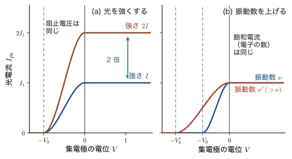
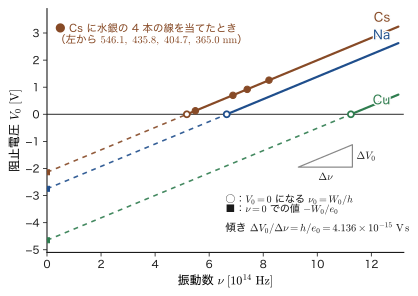
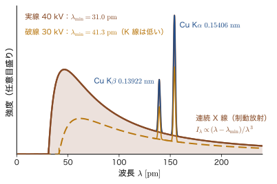
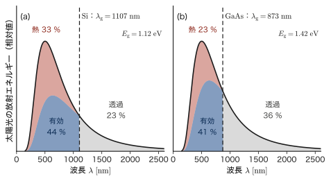

第4章光の粒子性 — 光電効果と光子
太陽電池は光を電気に変え，デジタルカメラのセンサーは光を電気信号に変え，光電子分光は物質の表面にある原子の種類と結合の状態を調べる．どれも，光が物質の中の電子にエネルギーを渡して電子を動かす現象——光電効果——にもとづいている．ところが 19 世紀の終わりごろ，この現象は当時の物理学の常識では説明できなかった．光は Maxwell（マクスウェル）の電磁気学が教えるとおり電磁波であり，Young（ヤング）の干渉実験（AD 03「大学基礎物理学」第16章 16.2）が示すとおり干渉する波である．波のエネルギーは振幅の 2 乗に比例するから，明るい光ほど電子に多くのエネルギーを与えるはずである．ところが実験で確かめられたのは，金属から電子が飛び出すかどうかを決めるのは光の明るさではなく光の色（振動数）だという，常識に反する事実だった．
この章では，実験事実 → 古典的な波の描像との矛盾 → Einstein（アインシュタイン）の光子説 → 数式の順に，この問題を一歩ずつ解きほぐす．Planck（プランク）は 1900 年に，空洞の壁の中の振動子のエネルギーが $h\nu$ の整数倍に限られると仮定して黒体放射を説明した（第3章）．Einstein は 1905 年に，この「とびとびのエネルギー」を光そのものに広げた．光は，1 個あたり $E=h\nu=\hbar\omega$ のエネルギーと $p=h/\lambda=\hbar k$ の運動量をもつ粒（光子）の流れとして振る舞う．この 2 つの関係式は，次章以降の Bohr（ボーア）の原子模型（第5章），Compton（コンプトン）散乱と de Broglie（ド・ブロイ）の物質波（第6章），そして Schrödinger（シュレーディンガー）方程式（第9章）へと続く量子力学の入口である．
後半（4.5 節）では，同じ考え方が現代の材料科学の道具とどうつながっているかを見る．X 線管から出る X 線の最短波長を決める Duane–Hunt の法則，固体の電子のエネルギーを測る光電子分光（XPS/UPS），そして太陽電池の効率を縛るバンドギャップである．なお，光の波としての性質と粒としての性質がどう両立するかという疑問（Young の実験との一見した矛盾）は，4.3 節で問いとして立て，第7章で電子のスリット実験とあわせて答える．
- 光電効果の 4 つの実験事実（限界振動数，強さに比例する光電流，強さによらない最大運動エネルギー，時間の遅れがないこと）と，阻止電圧法による測定の原理
- 古典的な波の強さ $I=2\pi^2\rho_{\mathrm m}vA^2f^2$ を導き，古典波動論がなぜ 4 つの事実のいずれも説明できないかを，数値（電子が出るまでに約 $10^3\ \mathrm{s}$）で示すこと
- Einstein の光子説と光電方程式 $h\nu=W_0+K_{\max}$，$e_0V_0=h\nu-W_0$ を使って，4 つの事実を説明し，$h$ と仕事関数 $W_0$ を実験データから決めること
- Planck–Einstein の関係 $E=h\nu=\hbar\omega$，$p=h/\lambda=\hbar k$ を，「質量のない光子がなぜ運動量をもつか」という疑問とあわせて，Maxwell の輻射圧と相対論の 2 通りで導くこと．光圧の大きさの見積り
- Duane–Hunt の法則 $\lambda_{\min}=hc/(e_0V)$，光電子分光の式 $E_{\mathrm{kin}}=h\nu-E_{\mathrm B}-\phi_{\mathrm{sp}}$，太陽電池とバンドギャップ $E_{\mathrm g}$ の関係を，光子のエネルギーの収支として理解すること
4.1 光電効果の実験事実 — 光を当てると金属から電子が飛び出す
4.1.1 光を当てると金属から電子が飛び出す
亜鉛や銅の金属板に紫外線を当てると，金属の中にいる自由電子が外へ飛び出す．この現象を発見した歴史は，電磁波の発見と絡み合っている．Hertz（ヘルツ）は 1887 年に，電磁波を火花放電で検出する実験の途中で，電極の間に紫外線が当たると火花が飛びやすくなることに気づいた．Hallwachs（ハルヴァックス）は翌 1888 年に，負に帯電させた亜鉛板に紫外線を当てると電荷が逃げていくが，正に帯電させた板では逃げないことを示した．J. J. Thomson（トムソン）は 1899 年に，このとき飛び出す粒子の電荷と質量の比が陰極線の電子と同じ（つまり，飛び出すものは電子）であることを確かめた．そして Lenard（レーナルト）は 1902 年に，光の強さを変えながら飛び出す電子のエネルギーを測定し，光を強くしても電子 1 個あたりのエネルギーは変わらないという，常識に反する結果を得た．
定義4.1 光電効果と光電子
光を物質（特に金属）に当てたとき，物質から電子が飛び出す現象を光電効果（photoelectric effect）という．飛び出した電子を光電子（photoelectron），光電子の流れがつくる電流を光電流（photocurrent）という．
図4.1 の陰極で起こっていることを，「光が当たって電子が飛び出す」1 場面として描くと，図4.4 のようになる（光子説の描像．4.3 節）．光電効果は，光が物質の中の電子にエネルギーを渡す最も基本的な過程である．物質の外へ電子が飛び出す場合を外部光電効果，半導体の中で光が電子を励起して電気伝導に寄与する電子と正孔をつくるだけで電子は物質の外へ出ない場合を内部光電効果という．この節では外部光電効果（以下，単に光電効果）を扱い，内部光電効果は 4.5 節の太陽電池で再び取り上げる．
図4.1 の装置で，陰極 $P$ に光を当てたとき，回路に流れる光電流と，集電極 $C$ の電位を調べるのが，光電効果の実験の基本である．測ることのできる量は，(i) 光の強さと振動数（波長）を変えたときの光電流，(ii) $C$ の電位 $V$ を変えたときの光電流の変化，(iii) 光を当ててから電流が流れるまでの時間，である．
4.1.2 実験でわかったこと — 常識と食い違う 4 つの事実
光は電磁波であり，波のエネルギーは振幅（次の 4.1.4 節で見るとおり，振幅の 2 乗）に比例する．だから最初は，「強い光を当てれば，それだけ多くの電子が飛び出し，しかも勢いよく飛び出すだろう」と考えるのが自然だった．しかし実験の結果は，この予想を裏切った．ここでいう「光の量」「光の強さ」は，単位面積を単位時間に通過する光のエネルギー（$\mathrm{W/m^2}$）を指す．観測された事実は次の 4 つである．
観測事実：光電効果の 4 つの性質
- 限界波長がある．ある波長 $\lambda_0$ より長い光（$\lambda\gt\lambda_0$）を当てても，どんなに光の量を多くしても電子は飛び出さない．$\lambda_0$ は金属の種類で決まる定数で，限界波長（threshold wavelength）という．振動数で言い直すと，$\nu\lt\nu_0=c/\lambda_0$ の光では電子が出ない．$\nu_0$ を限界振動数という（$\nu$（ニュー）は光の振動数，$c$ は光の速さ）．
- 光電流は光の量に比例する．$\lambda\lt\lambda_0$（$\nu\gt\nu_0$）の範囲では，光の量（強さ）と飛び出す電子の数（光電流）が比例する．
- 光電子の最大運動エネルギーは，光の強さによらず，振動数だけで決まる．光を強くしても電子の数が増えるだけで，1 個ずつの電子の勢いは変わらない．振動数を大きくする（波長を短くする）と，電子は勢いよく飛び出す（この測定法は 4.1.5 節）．
- 時間の遅れがない．光を当てた瞬間に電子が出る．遅れは実験で測れる限界（$10^{-9}\ \mathrm{s}$ 程度）より短い．弱い光でも同じである．
事実 1 と事実 3 は，「光のエネルギーは光の強さ（振幅）で決まる」という常識と真っ向から食い違う．光電子に与えられるエネルギーを決めているのは，光の明るさではなく，光の色——波長，あるいは振動数——なのである．これを一言でまとめると次のようになる．
注意：これは我々の常識とは違う！
電子が出るかどうか，どれだけ勢いよく出るかを決めるのは，光の波の振幅（明るさ）ではなく，波長もしくは振動数である．明るさは，飛び出す電子の数を決めるだけである．日常の感覚では「強い光はエネルギーが大きい」が，光電効果ではそうならない．常識の何が間違っているのかを 4.2 節と 4.3 節で調べる．
4.1.3 光のエネルギーは振動数に比例する — $E=h\nu$
Lenard の実験（1902）は，光電子の最大の運動エネルギーが光の強さによらないことを示した．では，何で決まるのか．Einstein（1905）は，「光が電子に一度に手渡すことのできるエネルギーの単位は，光の振動数に比例する」という答えを出し，Millikan（1916）の精密な実験がそれを確かめた（4.3.5 節）．その内容を，ここでは先に法則として書いておく．光がもつエネルギー——正確には，光が電子に 1 回で手渡すことのできるエネルギーの単位——は，光の振動数に比例する．比例定数を $h$ と書くと，次の関係になる．
法則4.1 光のエネルギーと振動数
振動数 $\nu$ の光のエネルギーの単位は，$\nu$ に比例する：
\begin{equation} E=h\nu \label{eq:4-hnu} \end{equation}$h$ は比例定数で，Planck 定数（Planck constant）とよばれ，$h=6.626\,070\,15\times10^{-34}\ \mathrm{J\,s}$ である．$\nu$（ニュー）は光の振動数（1 秒あたりの波の数．単位 Hz）である．
$E=h\nu$ を実験で検証したグラフは，図4.6（4.3.5 節）に示す．$h$ という文字は，Planck が黒体放射のスペクトルを説明するために，壁の中の振動子のエネルギーを $nh\nu$（$n=0,1,2,\dots$）と仮定したときに導入した定数と同じものである（第3章）．黒体放射の実験から決まる $h$ と，光電効果の実験から決まる $h$ が同じ値になることが，4.3 節で見る Einstein の理論の大きな成果になる．式 \eqref{eq:4-hnu} の意味——なぜ「振動数に比例するエネルギーの単位」なのか，古典的な波の考えとどう折り合うのか——は，4.2〜4.3 節でしっかり考える．ここでは，まず数値の感覚をつかんでおこう．
単位：電子ボルト（eV）と $hc=1239.84\ \mathrm{eV\,nm}$
原子スケールのエネルギーは，ジュールでは $10^{-19}\ \mathrm{J}$ 程度の小さい数になる．そこで，電子 1 個（電荷 $-e_0$．本書では電気素量を $e_0$ と書く．第1章）が電位差 $1\ \mathrm{V}$ で加速されて得る運動エネルギーを単位にとる．これが電子ボルト（electron volt，記号 eV）である：$1\ \mathrm{eV}=e_0\times1\ \mathrm{V}=1.602\,176\,634\times10^{-19}\ \mathrm{J}$（AD 03 第36章 36.1 の「電位差と仕事」）．波長 $\lambda$ の光では $\nu=c/\lambda$ だから，$E=hc/\lambda$ となり，
$$ hc=6.626\,070\,15\times10^{-34}\ \mathrm{J\,s}\times2.997\,924\,58\times10^{8}\ \mathrm{m/s}=1.986\,446\times10^{-25}\ \mathrm{J\,m}=1239.84\ \mathrm{eV\,nm} $$である（$1\ \mathrm{eV}=1.602\,176\,634\times10^{-19}\ \mathrm{J}$，$1\ \mathrm{m}=10^9\ \mathrm{nm}$ で換算した：$1.986\,446\times10^{-25}/1.602\,177\times10^{-19}=1.239\,84\times10^{-6}\ \mathrm{eV\,m}=1239.84\ \mathrm{eV\,nm}$）．したがって，波長を nm で測れば光のエネルギーは $E\ [\mathrm{eV}]=1239.84/\lambda\ [\mathrm{nm}]$ で得られる．赤い光（$700\ \mathrm{nm}$）は $1.77\ \mathrm{eV}$，緑の光（$532\ \mathrm{nm}$）は $2.33\ \mathrm{eV}$，青い光（$450\ \mathrm{nm}$）は $2.76\ \mathrm{eV}$，水銀灯の紫外線（$254\ \mathrm{nm}$）は $4.88\ \mathrm{eV}$ である．可視光の波長（$400\ \mathrm{nm}$〜$700\ \mathrm{nm}$）に対応するエネルギー $h\nu$ は，およそ $1.8\ \mathrm{eV}$〜$3.1\ \mathrm{eV}$ の範囲にある．
4.1.4 古典的な波のエネルギー — 強さは振幅の 2 乗に比例する
「光を強くすれば電子は勢いよく飛び出すはずだ」という予想の根拠を，式で確かめておこう．波が運ぶエネルギーの大きさを表す量が，単位面積（波の進行方向に垂直な $1\ \mathrm{m^2}$）を毎秒通過するエネルギー，すなわち波の強さ（intensity）$I$ である．単位は $\mathrm{J/(m^2\,s)}=\mathrm{W/m^2}$ である．波の強さは，AD 03（第11章 11.5）で導いた．ここでは，本章の議論に必要なので，もう一度最初から導く．
導出：波の強さ $I=2\pi^2\rho_{\mathrm m}vA^2f^2$
密度（単位体積あたりの質量）$\rho_{\mathrm m}\ [\mathrm{kg/m^3}]$ の媒質の中を，振幅 $A$，振動数 $f$，速さ $v$ の波が進むとする（AD 03 と同じ記号）．波が通過すると，媒質の各点は，つり合いの位置を中心に振幅 $A$，角振動数 $\omega=2\pi f$ の単振動をする．
ステップ 1：質量 $m$ の小部分の振動エネルギー（1 周期の平均）．進行波の中の小部分は，運動エネルギーと弾性エネルギー（位置エネルギー）を隣の部分とやりとりしながら，エネルギーを運んでいく．そのため，孤立した 1 個の単振動子のように「つり合いの位置で位置エネルギーが 0」とは限らない．しかし，1 周期で平均すると，運動エネルギーの平均と弾性エネルギーの平均は等しく，どちらも $\tfrac14m(A\omega)^2$（最大の速さは $A\omega$ なので，運動エネルギーの最大値 $\tfrac12m(A\omega)^2$ の半分）になる．したがって，1 周期の平均の全エネルギーは，最大の速さ $A\omega$ を使った運動エネルギーの最大値 $\tfrac12m(A\omega)^2$ に等しい（AD 03 11.5）：
$$ E_1=\frac12m(A\omega)^2=\frac12m\,A^2(2\pi f)^2=2\pi^2m\,A^2f^2 $$ステップ 2：単位体積あたりのエネルギー．単位体積（$1\ \mathrm{m^3}$）の媒質の質量は $\rho_{\mathrm m}$ だから，$m=\rho_{\mathrm m}$ とおくと，エネルギー密度は
\begin{equation} u=2\pi^2\rho_{\mathrm m}A^2f^2\ \ [\mathrm{J/m^3}] \label{eq:4-energy-density} \end{equation}ステップ 3：単位面積を毎秒通過するエネルギー．波は速さ $v$ で進むので，断面積 $1\ \mathrm{m^2}$ を 1 秒間に通過するのは，底面積 $1\ \mathrm{m^2}$，長さ $v\ \mathrm{m}$ の柱の中にあった波，すなわち体積 $v\ \mathrm{m^3}$ 分である．その中のエネルギーが，波の強さになる：
\begin{equation} I=u\,v=2\pi^2\rho_{\mathrm m}\,v\,A^2f^2\ \ [\mathrm{W/m^2}] \label{eq:4-intensity} \end{equation}次元の確認．右辺の単位は $\mathrm{(kg/m^3)\cdot(m/s)\cdot m^2\cdot s^{-2}}=\mathrm{kg/s^3}$，左辺は $\mathrm{J/(m^2\,s)}=\mathrm{kg\,m^2\,s^{-2}/(m^2\,s)}=\mathrm{kg/s^3}$ で一致する．なお，進行波では $u$ も $I$ も 1 周期での時間平均である（AD 03 11.5）．
（導出終わり）
イメージ：普通の波のエネルギーは振幅の 2 乗に比例する
式 \eqref{eq:4-intensity} が言っているのは，普通の波のエネルギー（強さ）は振幅の 2 乗に比例するということである．振幅を 2 倍にすると強さは 4 倍になる．光の場合は，媒質の変位 $A$ の代わりに電場の振幅 $E_0$ を使い，強さは $I=\tfrac12\varepsilon_0cE_0^2$（AD 03 42.5）となる．やはり振幅の 2 乗に比例し，振動数 $\nu$ は式のどこにも現れない．「光を強くする」ことは，「電場の振幅 $E_0$ を大きくする」ことに対応する．したがって古典論では，どんな振動数の光でも，$E_0$ さえ大きくすれば電子に与えるエネルギーを好きなだけ大きくできるはずである．
例題4.1 波の強さの見積り
空気（密度 $\rho_{\mathrm m}=1.2\ \mathrm{kg/m^3}$，音速 $v=340\ \mathrm{m/s}$）の中を伝わる，振動数 $f=1.0\ \mathrm{kHz}$，振幅 $A=1.0\ \mu\mathrm{m}$ の音波の強さ $I$ を求め，音圧レベル $L=10\log_{10}(I/I_0)$（$I_0=10^{-12}\ \mathrm{W/m^2}$）に換算せよ．また，$A$ を 2 倍にしたとき，$f$ を 2 倍にしたとき，強さは何倍になるか．
解答 式 \eqref{eq:4-intensity} に $A=1.0\times10^{-6}\ \mathrm{m}$，$f=1.0\times10^{3}\ \mathrm{Hz}$ を代入する．$2\pi^2=19.74$ だから，
$$ I=19.74\times1.2\times340\times(1.0\times10^{-6})^2\times(1.0\times10^{3})^2\ \mathrm{W/m^2} =19.74\times1.2\times340\times10^{-12}\times10^{6}=8.05\times10^{-3}\ \mathrm{W/m^2} $$（$19.74\times1.2=23.69$，$23.69\times340=8054$）．音圧レベルは $L=10\log_{10}\dfrac{8.05\times10^{-3}}{10^{-12}}=10\log_{10}(8.05\times10^{9})=10\times9.906=99\ \mathrm{dB}$ となり，工事現場のすぐそばのような大きな音に相当する（$1\ \mu\mathrm{m}$ はほんのわずかな振幅なのに，これだけのエネルギーになる）．式 \eqref{eq:4-intensity} より $I\propto A^2f^2$ だから，$A\to2A$ で $I\to4I$（4 倍），$f\to2f$ でも $I\to4I$（4 倍）である．両方を 2 倍にすれば 16 倍になる．
ここで，2 つの「光のエネルギー」を区別しておこう．波の強さ $I$ は，単位面積を毎秒通過するエネルギーの総量（$\mathrm{W/m^2}$）で，古典論では振幅の 2 乗（と $f^2$）に比例する．一方，法則4.1 の $E=h\nu$ は，光が 1 個の電子に一度に手渡すことのできるエネルギーの単位（$\mathrm{J}$）で，$\nu$ の 1 乗に比例する．この 2 つを結ぶのが，4.3.1 節の $I=\Phi h\nu$（$\Phi$：単位面積を毎秒通過する光子の数）である．また，この節の $f$ と光の $\nu$ は同じ振動数である（本書では，波一般の振動数を $f$，光の振動数を $\nu$ と書く）．
4.1.5 阻止電圧法 — 光電子のエネルギーを測る
光電子が持ち出したエネルギーを知りたい．電子の運動エネルギーを直接測るのは難しいが，電子を押し返す向きの電圧をかけて，電流が 0 になる電圧を探すという，簡単な方法がある．図4.1 の装置で，集電極 $C$ の電位を，陰極 $P$ を基準にして $V$ と書こう．$V\gt0$ は電子を引きつける向き（加速），$V\lt0$ は電子を押し返す向き（減速）である．
本書では，$K$ は電子の運動エネルギー（$K_{\max}$ はその最大値）だけを表す．陰極を離れたときの運動エネルギーが $K$ の電子が，集電極に着くまでに，静電気力が電子にする仕事を求めよう．電荷 $q=-e_0$ の電子が，電位 $0$ の点（陰極）から電位 $V$ の点（集電極）へ動くとき，静電気力のする仕事は $q\,(0-V)=e_0V$ である（AD 03 36.1）．仕事と運動エネルギーの関係（AD 03 第4章 4.2）から，集電極に着いたときの運動エネルギーは $K+e_0V$ である．$V\gt0$ なら電子は加速され，$V=-V_0\ (V_0\gt0)$ なら電子は運動エネルギーを $e_0V_0$ だけ失う．したがって，集電極に届くのは $K\ge e_0V_0$ の電子だけである．どの電子も届かなくなる電圧 $V=-V_0$ では，最も勢いのよい電子の運動エネルギー $K_{\max}$ がちょうど $e_0V_0$ に等しいので，
\begin{equation} K_{\max}=e_0V_0 \label{eq:4-kmax-v0} \end{equation}が成り立つ．この $V_0$ を阻止電圧（stopping potential）という．阻止電圧を測れば，光電子の最大運動エネルギーが，電子ボルトの単位でそのまま読み取れる：たとえば $V_0=0.70\ \mathrm{V}$ なら $K_{\max}=0.70\ \mathrm{eV}$ である．

図4.2 に，測定される光電流の様子を示す．(a) 光の量を 2 倍にすると，正の電位で電子がすべて集電極に届く飽和電流が 2 倍になる（事実 2）．しかし，電流が 0 になる阻止電圧は変わらない（事実 3）．つまり，光を強くすると飛び出す電子の数が増えるだけで，1 個の電子の最大運動エネルギーは変わらない．(b) 振動数を上げると，阻止電圧の大きさが大きくなる（事実 3）．この 4 つの事実は，式 \eqref{eq:4-intensity} の古典的な波の強さからは，どれも導けない．次の節でそのことを確かめる．
4.2 古典的な波の描像との矛盾
4.2.1 光が波なら何が起こるはずか
4.1 節で，光のエネルギーの単位は $h\nu$ で，光の強さ（振幅）ではなく振動数で決まる，という実験事実をまとめた．しかし，これを古典的な波の描像に当てはめようとすると，矛盾が生じる．光が Maxwell の電磁波であり，そのエネルギーが式 \eqref{eq:4-intensity} や $I=\tfrac12\varepsilon_0cE_0^2$ で与えられるものなら，次のような予想が立つ．
矛盾：古典波動論の 2 つの予想と，観測事実
事実（4.1 節の事実 1）：ある波長 $\lambda_0$ より長い光では，どんなに光の量を多くしても電子が飛び出さない．
予想 A（常識的な考え）：光は波 → 光を強くすれば振幅が大きくなる → 光のエネルギーは増える（$I\propto E_0^2$）→ 波長が長くても，十分に強い光なら電子を飛び出させるだけのエネルギーになるはずである．
予想 B（基本波のエネルギーが $h\nu$ だと考えたとき）：光は波 → 基本となる波 1 つのエネルギーが $h\nu$ だとする → 光の量を多くすると，波は重ね合わせができる → 全体のエネルギーは $E=\sum h\nu=Nh\nu$（$N$ は重ねた波の数）となって，$N$ を大きくすれば $E$ はいくらでも大きくなるはずである．
どちらの予想も，観測される事実と食い違う．この矛盾をどう説明するか？
予想 A と予想 B は，見かけは違うが，同じ前提に立っている．それは，電子は波が運んでくるエネルギーを，連続的に吸収し，好きなだけ蓄えることができるという前提である．波がたくさんあれば，あるいは振幅が大きければ，電子が蓄えるエネルギーは大きくなり，いつかは金属から脱出するのに必要なエネルギーを超える．事実 1 は，この前提が誤っていることを示している．
4.2.2 古典論の予想と観測の対比
4 つの事実を，古典論の予想と並べて比べよう（表4.1，図4.3）．
| 光の条件を変えると | 古典波動論の予想 | 実験で観測された事実 |
|---|---|---|
| 光を強くする（$\nu$ 一定） | 電子の運動エネルギーが増える | 運動エネルギーの最大値は変わらず，電子の数が増える |
| 振動数を下げる（強い光を当てる） | 強い光なら，どの振動数でも電子が出る | 限界振動数 $\nu_0$ より低いと，どんなに強くても出ない |
| 振動数を上げる（強さ一定） | 強さ（振幅）で決まる．振動数が高いほど電子のエネルギーが大きくなる理由はない（$I=\tfrac12\varepsilon_0cE_0^2$ に $\nu$ が現れない） | 最大運動エネルギーが振動数とともに（直線的に）増える |
| 電子が出るまでの時間 | 弱い光では，エネルギーが蓄積するまで長く待つ（約 $10^{3}\ \mathrm{s}$） | 遅れなし（$10^{-9}\ \mathrm{s}$ より短い） |
表の最後の行にある「約 $10^{3}\ \mathrm{s}$」の数値を，次の例題で確かめよう．
例題4.2 古典的な遅れ時間の見積り
強さ $I=1.0\times10^{-2}\ \mathrm{W/m^2}$ の弱い光を，仕事関数 $W_0=2.0\ \mathrm{eV}$ の金属に当てる．光が「波」で，そのエネルギーが連続的に流れ込むと仮定する．1 個の原子（半径 $0.1\ \mathrm{nm}$）に当たる光のエネルギーが，すべて 1 個の電子に集まるとして，電子が $W_0$ に相当するエネルギーをためて飛び出せるようになるまでの時間を見積もれ．また，この時間が $10^{-9}\ \mathrm{s}$ になるには，光の強さがいくら必要か．
解答 原子の断面積は $S=\pi(0.1\ \mathrm{nm})^2=\pi\times(1.0\times10^{-10}\ \mathrm{m})^2=3.14\times10^{-20}\ \mathrm{m^2}$．この面積に届く光の仕事率は，強さ（単位面積あたりの仕事率）に面積をかけて，
$$ P=IS=(1.0\times10^{-2}\ \mathrm{W/m^2})(3.14\times10^{-20}\ \mathrm{m^2})=3.14\times10^{-22}\ \mathrm{W} $$である．仕事関数は $W_0=2.0\ \mathrm{eV}=2.0\times1.602\times10^{-19}\ \mathrm{J}=3.20\times10^{-19}\ \mathrm{J}$ だから，これだけ蓄えるのに要する時間は
$$ t=\frac{W_0}{P}=\frac{3.20\times10^{-19}\ \mathrm{J}}{3.14\times10^{-22}\ \mathrm{W}}=1.02\times10^{3}\ \mathrm{s}\approx17\ \text{分} $$となる．実験では，光を当てた瞬間に（$10^{-9}\ \mathrm{s}$ より短い時間で）電子が出るので，古典的な波の描像とは $10^{12}$ 倍も食い違う．遅れを $10^{-9}\ \mathrm{s}$ にするには，同じ見積りで $I=W_0/(St)=3.20\times10^{-19}/(3.14\times10^{-20}\times10^{-9})=1.0\times10^{10}\ \mathrm{W/m^2}$ の光，すなわち集光したレーザーのような強い光が必要になる．ふつうの水銀灯の光で電子がすぐに出ることは，古典的な波のエネルギーの蓄積では説明できない．（この見積りは，電子が 1 個の原子の断面積だけから光を集めるという粗いものだが，どれほど寛大に見積っても，$10^{12}$ 倍の食い違いはなくならない．）
問い：電子はいつ，どのようにエネルギーを受け取るのか
事実 1（限界波長）と事実 4（遅れなし）を一緒に考えると，電子は，光からまとまった量のエネルギーを 1 回で，瞬間的に受け取るように見える．そのまとまりの大きさが，光の強さではなく振動数で決まる（事実 3）とすれば，事実は素直に説明できる．そのようなエネルギーのまとまりをもつ「光の粒」を考えたのが，次節の Einstein の光子説である．
4.3 Einstein の光子説 — 仕事関数と光電方程式
4.3.1 光量子仮説 — 光を粒子の集まりとして考える
4.2 節の矛盾を説明するために，Einstein（アインシュタイン）は 1905 年に，光を粒子として考える光量子仮説（光子説）を提唱した．Planck の理論（第3章）で「とびとび」になったのは，空洞の壁の中の振動子のエネルギー $nh\nu$ だった．空間を伝わる光そのものは，Maxwell の波のままだった．Einstein はさらに一歩進めて，光そのものが，エネルギー $h\nu$ をもつ粒の集まりだと考えたのである．
仮説4.1 光量子仮説（Einstein，1905）
振動数 $\nu$ の光は，1 個あたり $h\nu$ のエネルギーをもつ粒子——光量子（light quantum．のちに光子（photon）と呼ばれる）——の流れとして，物質とエネルギーをやりとりする．
- 光の強さは，単位時間に単位面積を通過する光子の数（光子数流束，photon flux）$\Phi\ [\mathrm{m^{-2}\,s^{-1}}]$ で決まり，$I=\Phi\,h\nu$ である．光を強くするとは，光子の数を増やすことであり，1 個の光子のエネルギーは変わらない．
- 光子は分けられない．光子が吸収される場合には，1 個の光子が 1 個の電子にエネルギー $h\nu$ の全部を渡す（光子が散乱されて一部のエネルギーだけを渡す過程は，第6章の Compton 散乱で扱う）．複数の光子のエネルギーが，1 個の電子に蓄積されることはない（ごく強い光の場合の例外は演習4.8）．
光子（photon）という名前は，1926 年に G. N. Lewis（ルイス）が提案したもので，Einstein 自身は光量子（Lichtquant）と呼んでいた．この本では，以後「光子」と書く．光子 1 個のエネルギーは $10^{-19}\ \mathrm{J}$ 程度（可視光で数 eV）とごく小さいので，たとえば日なたの光には，1 秒あたり 1 平方メートルに約 $3\times10^{21}$ 個もの光子が含まれる（演習4.3）．このため，光は連続的な波のように見えるのである．
問い：干渉する光が，なぜ粒子なのか
光が粒子のように振る舞う，というと，Young の実験（AD 03 16.2）との矛盾が気になる．二重スリットを通った光は，明るい縞と暗い縞をつくる．縞は，2 つのスリットを通った波の重ね合わせで説明される（光路差が波長の整数倍で強め合い，半整数倍で弱め合う）．もし光が弾丸のような粒子だけなら，2 つのスリットの後ろに 2 本の明るい帯ができるだけで，縞はできないはずである．一見すると，光は波であり粒子でもあるという，矛盾した性質をもつことになる．
この疑問の答えは，第7章で電子のスリット実験を使って詳しく調べる．ここでは，答えの入口だけを述べておく．(1) 光電効果が教えてくれるのは，光が物質にエネルギーを渡す（吸収される）ときの単位が $h\nu$ だということである．(2) 光が空間を伝わるときの干渉や回折は，波の言葉（振幅と位相）で記述される．(3) 検出器で光子が 1 個ずつ見つかる位置の確率は，波の強さ（振幅の 2 乗）に比例する．光が弱くて光子が 1 個ずつしか来なくても，長い時間，光子を受け止めると，やがて干渉縞が現れる．「波の強さは，粒子が見つかる確率を表す」というこの考え方は，Born の確率解釈（第8章）につながる．Einstein 自身も 1909 年の講演で，光の理論は，波動と粒子の両方の性質を融合したものになるだろうと述べている．
さて，光を「エネルギーをもった粒子の集まり」と考えると，光電効果の場面では，波の重ね合わせも波の振幅も考えなくてよい．考えるのは，光子 1 個と電子 1 個の 1 対 1 の出会いだけである．「たくさんの光子のエネルギーが足し合わされて 1 個の電子に集まる」ことは起こらないと考えるので，4.2 節の予想 B（$E=\sum h\nu$）は成り立たない．また，予想 A で振幅の 2 乗に比例していた「強さ」は，光子の個数（$I=\Phi h\nu$ の $\Phi$）に置き換わる．次の 4.3.2 節で，電子が金属から出るためのエネルギーを導入して，この考えを数式にする．
4.3.2 仕事関数 — 電子が金属から出るために必要なエネルギー
金属の中の電子（自由電子）は，金属の中を自由に動きまわれるが，金属の外へは簡単には出られない．金属の格子をつくっている正の電荷（イオン）に引きつけられていて，その束縛を振り切るには，ある最小のエネルギーが必要だからである．このエネルギーを仕事関数という．
定義4.2 仕事関数と限界振動数
金属から電子 1 個を外へ取り出す（光電効果を起こす）ために必要な最小のエネルギーを，その金属の仕事関数（work function）$W_0$ という．これに対応する光の振動数を $\nu_0$ として，
\begin{equation} W_0=h\nu_0 \label{eq:4-workfunction} \end{equation}と書く．$\nu_0=W_0/h$ が限界振動数，$\lambda_0=c/\nu_0=hc/W_0$ が限界波長である．
仕事関数の値は，金属の種類で決まり，およそ $2\ \mathrm{eV}$ から $6\ \mathrm{eV}$ の範囲にある（表4.2）．アルカリ金属（Cs，K，Na）は小さいので，可視光でも光電効果が起こる．Cu，Au，Pt などは大きく，紫外線が必要である．（表の値は代表値で，結晶面や表面の汚れによって $0.1$〜$0.5\ \mathrm{eV}$ 程度変わる．）
| 金属 | $W_0\ [\mathrm{eV}]$ | $\lambda_0\ [\mathrm{nm}]$ | $\nu_0\ [10^{14}\ \mathrm{Hz}]$ | 光の色 |
|---|---|---|---|---|
| Cs | 2.14 | 579.4 | 5.17 | 黄色まで |
| K | 2.30 | 539.1 | 5.56 | 緑まで |
| Na | 2.75 | 450.9 | 6.65 | 青まで |
| Al | 4.08 | 303.9 | 9.87 | 紫外線 |
| Cu | 4.65 | 266.6 | 11.24 | 紫外線 |
| Au | 5.1 | 243.1 | 12.33 | 紫外線 |
| Pt | 5.65 | 219.4 | 13.66 | 紫外線 |
光子 1 個のエネルギー $h\nu$ と，仕事関数 $W_0$ を比べると，次の 2 つの場合に分かれる．
場合分け：光子のエネルギーと仕事関数
- $h\nu\lt W_0$（$\nu\lt\nu_0$）のとき：光子 1 個のエネルギーが仕事関数より小さい．電子は金属の格子の正電荷の束縛から逃れられない．光がどんなに強く（光子が多く）ても，光子どうしのエネルギーは足し合わされないので，電子は出ない（事実 1）．
- $h\nu\gt W_0$（$\nu\gt\nu_0$）のとき：光子 1 個のエネルギーが仕事関数より大きい．電子は正電荷の束縛から自由になり，飛び出す．余ったエネルギーは，電子の運動エネルギーになる．
このように，光を「エネルギーをもった粒子の集まり」として考えると，古典波動論では説明できなかった矛盾が説明できる．図4.4 に，弱い青い光，強い青い光，強い赤い光の 3 つの場合を示す．
4.3.3 Einstein の光電方程式
光子 1 個が，金属中の電子 1 個に吸収される場面を，エネルギー保存則で式にしよう．
導出：Einstein の光電方程式
ステップ 1：Fermi 準位にいる電子．金属の中の電子は，エネルギーの低い状態から順に詰まっている（詳しくは AD 03 52.8，固体物理学 AD 06）．電子が詰まっている一番上のエネルギー準位を Fermi 準位（Fermi level）$E_{\mathrm F}$ という．Fermi 準位から，電子を真空中に静止させて取り出すのに必要なエネルギーが，仕事関数 $W_0$ である（図4.5）．この電子が光子 1 個（エネルギー $h\nu$）を吸収すると，エネルギー保存則より，
$$ h\nu=W_0+K $$となる．左辺は吸収したエネルギー，右辺第 1 項は金属から脱出するのに使われるエネルギー，第 2 項は真空中に出たときの電子の運動エネルギー $K$ である．
ステップ 2：もっと深いところの電子．Fermi 準位よりも $\delta\ (\ge0)$ だけ低いエネルギー準位にいる電子は，取り出すのに $W_0+\delta$ のエネルギーが必要になる．したがって，$h\nu=W_0+\delta+K$，すなわち $K=h\nu-W_0-\delta\le h\nu-W_0$ となる．また，金属の内部から表面までの途中で他の電子や格子にぶつかってエネルギーを失う電子も，$K$ が小さくなる．こうして，光電子の運動エネルギーは 0 から最大値までの間に分布し，その最大値は Fermi 準位の電子が途中でエネルギーを失わずに出る場合に実現する．
ステップ 3：最大値．以上より，最大の運動エネルギーは $K_{\max}=h\nu-W_0$ である．
（導出終わり）
法則4.2 Einstein の光電方程式
金属に振動数 $\nu$ の光を当てたとき，光電子の運動エネルギーの最大値 $K_{\max}$ は，
\begin{equation} h\nu=W_0+K_{\max}\qquad(K_{\max}=h\nu-W_0\ \ge0) \label{eq:4-einstein} \end{equation}で与えられる．$h\nu\lt W_0$ のときは光電子は出ない．阻止電圧 $V_0$（式 \eqref{eq:4-kmax-v0}）を使うと，
\begin{equation} e_0V_0=h\nu-W_0\qquad\text{すなわち}\qquad V_0=\frac{h}{e_0}\,\nu-\frac{W_0}{e_0} \label{eq:4-stopping} \end{equation}となる．$V_0$ は $\nu$ の 1 次関数で，直線の傾きは物質によらず $h/e_0$，切片が $-W_0/e_0$ である．
注意：$K_{\max}$ は「最大値」，実際の測定では切片は集電極の仕事関数
(1) 式 \eqref{eq:4-einstein} は，光電子の運動エネルギーの最大値を与える式である．金属の内部から出てくる電子の運動エネルギーは，導出のステップ 2 のとおり，これより小さい（分布している）．阻止電圧が測るのはその最大値である．
(2) 実際の実験では，陰極 $P$ と集電極 $C$ が別の金属だと，仕事関数の差（接触電位差）のために，電子が $P$ から $C$ へ移るあいだに，$e_0\times$（接触電位差）だけの運動エネルギーの増減が加わる．このため，式 \eqref{eq:4-stopping} の切片は，陰極ではなく，集電極の仕事関数で決まる．傾き $h/e_0$ は，接触電位差の影響を受けない．Millikan の実験（4.3.5 節）は，この点にも注意して行われた．この章では，2 つの電極の仕事関数が同じである理想的な場合を扱う．
例題4.3 Na の光電効果
Na（$W_0=2.75\ \mathrm{eV}$）について，(a) 限界波長と限界振動数を求めよ．(b) 波長 $405\ \mathrm{nm}$ の光を当てたときの光電子の最大運動エネルギー，阻止電圧，最大の速さを求めよ．(c) 波長 $546\ \mathrm{nm}$ の光の強さを $10^6$ 倍にしたら，電子は出るか．
解答 (a) $\lambda_0=\dfrac{hc}{W_0}=\dfrac{1239.84\ \mathrm{eV\,nm}}{2.75\ \mathrm{eV}}=450.9\ \mathrm{nm}$．$\nu_0=\dfrac{W_0}{h}=\dfrac{2.75\times1.602\times10^{-19}\ \mathrm{J}}{6.626\times10^{-34}\ \mathrm{J\,s}}=6.65\times10^{14}\ \mathrm{Hz}$（$=c/\lambda_0$ を確かめると $2.998\times10^8/(450.9\times10^{-9})=6.65\times10^{14}\ \mathrm{Hz}$ で一致）．
(b) 光子 1 個のエネルギーは $h\nu=\dfrac{1239.84}{405}\ \mathrm{eV}=3.061\ \mathrm{eV}$．これは $W_0=2.75\ \mathrm{eV}$ より大きいので電子が出る．式 \eqref{eq:4-einstein} より $K_{\max}=3.061-2.75=0.31\ \mathrm{eV}$（$=0.311\times1.602\times10^{-19}\ \mathrm{J}=4.99\times10^{-20}\ \mathrm{J}$）．阻止電圧は式 \eqref{eq:4-stopping} より $V_0=K_{\max}/e_0=0.31\ \mathrm{V}$．最大の速さは，$\tfrac12m_{\mathrm e}v^2=K_{\max}$ より $v=\sqrt{2K_{\max}/m_{\mathrm e}}=\sqrt{2\times4.99\times10^{-20}/(9.109\times10^{-31})}\ \mathrm{m/s}=3.3\times10^{5}\ \mathrm{m/s}$（光速の約 0.1 %なので，非相対論的な式でよい）．
(c) $546\ \mathrm{nm}$ の光子のエネルギーは $1239.84/546=2.27\ \mathrm{eV}$ で，$W_0=2.75\ \mathrm{eV}$ より小さい．光子 1 個が電子 1 個にしか作用せず，エネルギーが蓄積されないので，強さを $10^6$ 倍にしても（光子の数を $10^6$ 倍にしても）電子は出ない．古典論の予想 A では，出るはずだった．
4.3.4 光子説による 4 つの事実の説明
光電方程式 \eqref{eq:4-einstein} と光子の考え（仮説4.1）で，4.1 節の 4 つの事実は，次のようにすべて説明される（表4.3）．
| 事実 | 光子説による説明 |
|---|---|
| 1. 限界波長 $\lambda_0$ がある | 光子 1 個のエネルギー $h\nu$ が $W_0$ より小さいと，電子は 1 個の光子からだけでは脱出できない．光子を何個当てても，エネルギーは足し合わされない．限界は $h\nu_0=W_0$，$\lambda_0=hc/W_0$ |
| 2. 光電流は光の量に比例する | 光の強さ $I=\Phi h\nu$ は光子数流束 $\Phi$ に比例する．1 個の光子が 1 個の電子を出す確率（量子効率）を $\eta$ とすると，毎秒飛び出す電子の数は $\eta\Phi S$（$S$ は照射面積）で，$I$ に比例する |
| 3. $K_{\max}$ は強さによらず $\nu$ だけで決まる | $K_{\max}=h\nu-W_0$ に強さ $I$（光子の数）は現れない．1 個の電子が受け取るエネルギーは，1 個の光子の $h\nu$ だけである．$\nu$ に比例して大きくなる |
| 4. 時間の遅れがない | 光子 1 個が電子 1 個にエネルギーの全部を一瞬で渡す．エネルギーを蓄積する時間は要らない．光が弱く光子がまばらでも，光子が当たった瞬間に電子が出る |
事実 2 の量子効率 $\eta$ は，金属では $10^{-4}$〜$10^{-3}$ 程度と小さい．入射した光子の大部分は，金属の表面で反射されたり，電子を励起するだけで金属の内部で熱に変わったりするからである．次の例題で，光電流の大きさを見積もろう．
例題4.4 光電流と光の強さ
波長 $405\ \mathrm{nm}$，出力 $1.0\ \mathrm{mW}$ のレーザー光を，量子効率 $\eta=0.1\ \%$ の光電管（陰極は例題4.3 の Na）に当てる．毎秒当たる光子の数と，光電流を求めよ．光の強さを 2 倍にすると，光電流はどうなるか．
解答 光子 1 個のエネルギーは $h\nu=hc/\lambda=1239.84/405=3.061\ \mathrm{eV}=3.061\times1.602\times10^{-19}\ \mathrm{J}=4.905\times10^{-19}\ \mathrm{J}$．毎秒当たる光子の数は，出力を 1 個のエネルギーで割って，
$$ N=\frac{P}{h\nu}=\frac{1.0\times10^{-3}\ \mathrm{W}}{4.905\times10^{-19}\ \mathrm{J}}=2.04\times10^{15}\ \mathrm{s^{-1}} $$量子効率 $0.1\ \%$ なので，毎秒飛び出す電子は $\eta N=2.04\times10^{12}\ \mathrm{s^{-1}}$．電流は，電子の数に電気素量をかけて，$I_{\mathrm{ph}}=e_0\eta N=(1.602\times10^{-19}\ \mathrm{C})(2.04\times10^{12}\ \mathrm{s^{-1}})=3.3\times10^{-7}\ \mathrm{A}=0.33\ \mu\mathrm{A}$．光の強さ（出力）を 2 倍にすると，光子の数 $N$ が 2 倍になり，光電流も 2 倍の $0.65\ \mu\mathrm{A}$ になる．このとき，1 個の光電子のエネルギー $K_{\max}=0.31\ \mathrm{eV}$ は変わらない（事実 2 と事実 3）．古典論では，光を 2 倍強くすると光電子のエネルギーが増えるはずであった．
4.3.5 Millikan の実験 — $h$ を光電効果から決める
Einstein の式 \eqref{eq:4-stopping} は，阻止電圧 $V_0$ が振動数 $\nu$ の 1 次関数で，傾きが物質によらない $h/e_0$ だという，はっきり検証できる予言をする．1905 年当時，この予言を確かめられるほど精密な実験はなかった（Lenard の測定は，エネルギーが強さによらないことを示したものの，$\nu$ への依存を定量的に調べてはいなかった）．
この検証を行ったのが，Millikan（ミリカン）である．Millikan は 1912 年ごろから数年をかけて，真空管の中で，アルカリ金属（Na，Li など）の表面を回転するナイフで削って清浄な面をつくり，水銀ランプの光を分光して波長を選び，阻止電圧を測定した．結果は，図4.6 のように，$V_0$ と $\nu$ が直線関係になり，傾きから決まった $h$ は約 $6.57\times10^{-34}\ \mathrm{J\,s}$（約 0.5 % の精度）だった（Millikan，1916）．これは，Planck が黒体放射から得た値（$6.55\times10^{-34}\ \mathrm{J\,s}$）とほぼ一致する．全く別の現象から決まった $h$ が同じ値になったことは，$h$ が自然界の基本定数であり，光電効果と黒体放射が同じ量子の性質によるものであることを示している．なお，Millikan 自身は，Einstein の式が実験と正確に一致することを認めながらも，光量子仮説そのものには長く懐疑的だったといわれる．

例題4.5 阻止電圧のデータから $h$ と $W_0$ を決める
Cs の陰極に，水銀ランプの 4 本の線を当てて阻止電圧を測ったところ，次の表の値（説明のための値）が得られた．最小二乗法で直線 $V_0=a\nu+b$ を当てはめ，$h$，$W_0$，限界波長 $\lambda_0$ を求めよ．
| 波長 $\lambda\ [\mathrm{nm}]$ | 546.1 | 435.8 | 404.7 | 365.0 |
|---|---|---|---|---|
| 振動数 $\nu\ [10^{14}\ \mathrm{Hz}]$ | 5.490 | 6.879 | 7.408 | 8.213 |
| 阻止電圧 $V_0\ [\mathrm{V}]$ | 0.13 | 0.70 | 0.92 | 1.26 |
解答 $\nu=c/\lambda$ で振動数を求める：$2.998\times10^{8}/(546.1\times10^{-9})=5.490\times10^{14}\ \mathrm{Hz}$，同様に $435.8\ \mathrm{nm}$ で $6.879\times10^{14}\ \mathrm{Hz}$，$404.7\ \mathrm{nm}$ で $7.408\times10^{14}\ \mathrm{Hz}$，$365.0\ \mathrm{nm}$ で $8.213\times10^{14}\ \mathrm{Hz}$ である．$x=\nu/(10^{14}\ \mathrm{Hz})$，$y=V_0/\mathrm{V}$ とおく．平均は $\bar x=(5.490+6.879+7.408+8.213)/4=6.9975$，$\bar y=(0.13+0.70+0.92+1.26)/4=0.7525$ である．偏差，偏差の積，偏差の 2 乗は次のとおりである．
$$ \begin{array}{c|cccc|c} i & 1 & 2 & 3 & 4 & \text{和}\\ \hline x_i & 5.490 & 6.879 & 7.408 & 8.213 & \\ y_i & 0.13 & 0.70 & 0.92 & 1.26 & \\ x_i-\bar x & -1.5075 & -0.1185 & 0.4105 & 1.2155 & 0 \\ y_i-\bar y & -0.6225 & -0.0525 & 0.1675 & 0.5075 & 0 \\ (x_i-\bar x)(y_i-\bar y) & 0.9384 & 0.0062 & 0.0688 & 0.6169 & 1.6303 \\ (x_i-\bar x)^2 & 2.2726 & 0.0140 & 0.1685 & 1.4774 & 3.9325 \end{array} $$したがって，偏差の積の和は $S_{xy}=\sum(x_i-\bar x)(y_i-\bar y)=1.6303$，偏差の 2 乗和は $S_{xx}=\sum(x_i-\bar x)^2=3.9325$ である．最小二乗法の傾きと切片は $a=S_{xy}/S_{xx}=1.6303/3.9325=0.4146$，$b=\bar y-a\bar x=0.7525-0.4146\times6.9975=-2.148$ となる．傾きは $a=0.4146\ \mathrm{V}/(10^{14}\ \mathrm{Hz})=4.146\times10^{-15}\ \mathrm{V\,s}$ だから，式 \eqref{eq:4-stopping} の傾き $h/e_0$ に等しいとおいて，
$$ h=e_0a=(1.602\times10^{-19}\ \mathrm{C})(4.146\times10^{-15}\ \mathrm{V\,s})=6.64\times10^{-34}\ \mathrm{J\,s} $$切片は $-W_0/e_0$ だから $W_0=-e_0b=2.15\ \mathrm{eV}$（切片 $-2.148\ \mathrm{V}$ に電気素量をかけると，エネルギーが eV の単位で読み取れる）．限界振動数は $V_0=0$ となる $\nu_0=-b/a=2.148/0.4146\times10^{14}\ \mathrm{Hz}=5.18\times10^{14}\ \mathrm{Hz}$ で，限界波長は $\lambda_0=c/\nu_0=2.998\times10^8/(5.18\times10^{14})\ \mathrm{m}=578.5\ \mathrm{nm}$ である．真の値（$h=6.626\times10^{-34}\ \mathrm{J\,s}$，$W_0=2.14\ \mathrm{eV}$，$\lambda_0=579.4\ \mathrm{nm}$）と，$h$ で $0.2\ \%$，$W_0$ で $0.4\ \%$ の差で一致する（$V_0$ を $0.01\ \mathrm{V}$ の桁に丸めたことによる誤差）．
4.3.6 Einstein はなぜこの仮説を立てたのか
ここで，光子仮説について一つ疑問が残る．当時，光子仮説を支える直接の実験は光電効果などごく限られた現象だけで，干渉や回折という波の現象を説明する手立てはなかった．それなのに Einstein は，なぜ「光は粒子の集まりだ」というような大胆な考えを，1905 年の論文で提唱したのだろうか．結論から言えば，Einstein はやみくもにこの仮説を立てたわけではない．彼の出発点は光電効果ではなく，黒体放射の熱力学であった（第3章の 3.4.8 節）．論文の表題は「光の発生と変換に関する一つの発見法的な観点について」で，光電効果は，その考え方を裏づける応用の一つとして，後半に登場する．
要点：Wien 領域の放射は，粒子の理想気体と同じ体積依存性をもつ
導出は第3章 3.4 節（3.4.8）で行ったので，ここでは筋道と結論だけを述べる．高振動数側（$h\nu\gg k_{\mathrm B}T$，Wien 領域）では，スペクトル密度は Wien の式 $U(\nu)=A\nu^3e^{-h\nu/k_{\mathrm B}T}$（$A=8\pi h/c^3$）で近似される．体積 $V$ の空洞に閉じ込めた，振動数が $\nu$ 付近の狭い幅 $\dd\nu$ の放射のエネルギーを $E=U\,V\,\dd\nu$ とする．この式を $1/T$ について解き，熱力学の関係 $\partial S/\partial E=1/T$ を $E=0$ から積分するとエントロピー $S(E,V)$ が求まる．エネルギー $E$ と振動数 $\nu$ を一定にして体積を $V_0$ から $V$ に変えたときの変化は，
\begin{equation} S(V)-S(V_0)=\frac{k_{\mathrm B}E}{h\nu}\ln\frac{V}{V_0} \label{eq:4-entropy-radiation} \end{equation}である．一方，互いに独立な $N$ 個の粒子が体積 $V$ の容器の中を自由に動きまわっているとき，そのうち体積 $V_0\ (\lt V)$ の部分に全部が見いだされる確率は $(V_0/V)^N$ である．Boltzmann の原理 $S=k_{\mathrm B}\ln W$（AD 03 第49章）より，体積 $V$ の状態と体積 $V_0$ の状態のエントロピーの差，すなわち理想気体の体積を $V_0$ から $V$ に広げたときのエントロピーの変化は $k_{\mathrm B}\ln(V/V_0)^N=k_{\mathrm B}N\ln(V/V_0)$ である（第3章 3.4.8 節と同じ向きである）．式 \eqref{eq:4-entropy-radiation} と比べると，$N=E/(h\nu)$ のとき，両者は完全に一致する．
すなわち，Wien 領域の単色放射は，熱力学的には，エネルギー $h\nu$ をもつ $N=E/(h\nu)$ 個の独立な粒子の理想気体と同じように振る舞う．Einstein はこの一致を偶然とは考えず，光は（少なくとも Wien 領域では）エネルギー $h\nu$ の粒子——光量子——の集まりだと結論した．光電効果はその結論の応用であり，仮説はやみくもに立てられたものではなかった．
Einstein は 1905 年の論文で，この考え方から予想される現象として，光電効果のほかに，光ルミネセンス（物質が光を吸収して別の光を出す現象で，出る光の振動数は入射光より低い，という Stokes（ストークス）の法則）と，紫外線による気体の電離をあげている．光量子仮説は，当時の物理学者の多く（Planck や，後に原子模型をつくる Bohr を含む）には長い間受け入れられなかった．光の波としての性質（干渉・回折）が，あまりにも確かだったからである．仮説が広く受け入れられるようになったのは，1923 年に Compton が，光子が運動量をもつ粒子として電子と衝突する証拠を示した後である（4.4 節，第6章）．Einstein は 1921 年の Nobel 物理学賞を，「理論物理学への貢献，特に光電効果の法則の発見」によって受けた．Millikan は 1923 年に，電気素量と光電効果の研究で Nobel 物理学賞を受けている．
4.4 光子のエネルギーと運動量 — Planck–Einstein の関係
4.4.1 Planck–Einstein の関係 — 光子と電磁波を結びつける式
光子（photon，添字 ph）と，それに対応する電磁波（electromagnetic radiation，添字 em）を結びつける関係式をまとめよう．左辺は光子の性質（エネルギー $E$，運動量 $p$），右辺は電磁波の性質（振動数 $\nu$，波長 $\lambda$，角振動数 $\omega$，波数 $k$）である．
法則4.3 Planck–Einstein の関係
振動数 $\nu_{\mathrm{em}}$，波長 $\lambda_{\mathrm{em}}$ の電磁波に対応する光子のエネルギーと運動量の大きさは，
\begin{equation} E_{\mathrm{ph}}=h\nu_{\mathrm{em}}=\hbar\omega_{\mathrm{em}} \label{eq:4-pe-energy} \end{equation} \begin{equation} p_{\mathrm{ph}}=\frac{h\nu_{\mathrm{em}}}{c}=\frac{h}{\lambda_{\mathrm{em}}}=\hbar k_{\mathrm{em}} \label{eq:4-pe-momentum} \end{equation}である．ここで $\omega_{\mathrm{em}}=2\pi\nu_{\mathrm{em}}$（角振動数），$\hbar=h/2\pi$，$k_{\mathrm{em}}=2\pi/\lambda_{\mathrm{em}}$（波数）で，$k_{\mathrm{em}}=\lvert\bm{k}_{\mathrm{em}}\rvert$ は波数ベクトル $\bm{k}_{\mathrm{em}}$（向きは波の進む向き）の大きさである．光子の運動量はベクトルとして $\bm{p}_{\mathrm{ph}}=\hbar\bm{k}_{\mathrm{em}}$ と書ける．
以下，混乱の恐れがないときは添字 ph，em を省略して，$E=h\nu=\hbar\omega$，$p=h/\lambda=\hbar k$ と書く．新しく登場する記号を確認しておこう．
- $\hbar$（エイチバー）は $h/2\pi$ で，$\hbar=1.054\,571\,817\ldots\times10^{-34}\ \mathrm{J\,s}=6.582\,119\,569\ldots\times10^{-16}\ \mathrm{eV\,s}$．量子力学では，$h$ よりも $\hbar$ のほうが式がすっきりするので，これ以降は $\hbar$ を多用する．$h$ と $\hbar$ を混同しないこと．
- $\omega=2\pi\nu$（角振動数．単位 $\mathrm{rad/s}$）は，波 $\cos(kx-\omega t)$ の位相が単位時間に進む量である．$\nu$ が「1 秒間の波の数」，$\omega$ が「1 秒間に位相が進む角度」．
- $k=2\pi/\lambda$（波数．単位 $\mathrm{rad/m}$）は，波 $\cos(kx-\omega t)$ の位相が単位長さに進む量である．分光学で使う波数 $\tilde\nu=1/\lambda$（単位 $\mathrm{cm^{-1}}$）とは $2\pi$ 倍だけ違うので注意．
式 \eqref{eq:4-pe-momentum} は，式 \eqref{eq:4-pe-energy} から 1 行ずつ導ける．$p=E/c$（4.4.2 節で導く）と $c=\nu\lambda$ を使うと，
$$ p=\frac{E}{c}=\frac{h\nu}{c}=\frac{h\nu}{\nu\lambda}=\frac{h}{\lambda}=\hbar\cdot\frac{2\pi}{\lambda}=\hbar k $$となる（4 番目の等号で分子と分母の $\nu$ が約分され，5 番目の等号で $\hbar=h/2\pi$ を使い $h=2\pi\hbar$ とおいた）．光のエネルギーは振動数 $\nu$ に，光の運動量は波長の逆数 $1/\lambda$ に比例するのである．
| 電磁波 | 波長 $\lambda$ | 振動数 $\nu$ | 光子のエネルギー $E$ | 運動量 $p=h/\lambda\ [\mathrm{kg\,m/s}]$ |
|---|---|---|---|---|
| FM ラジオ | 3.0 m | 100 MHz | $4.1\times10^{-7}\ \mathrm{eV}$ | $2.2\times10^{-34}$ |
| 電子レンジのマイクロ波 | 12.2 cm | 2.45 GHz | $1.0\times10^{-5}\ \mathrm{eV}$ | $5.4\times10^{-33}$ |
| 赤色光 | 700 nm | 428 THz | 1.77 eV | $9.5\times10^{-28}$ |
| 緑色光 | 532 nm | 564 THz | 2.33 eV | $1.25\times10^{-27}$ |
| 青色光 | 450 nm | 666 THz | 2.76 eV | $1.47\times10^{-27}$ |
| 紫外線（水銀灯） | 254 nm | 1180 THz | 4.88 eV | $2.6\times10^{-27}$ |
| X 線（Cu Kα） | 0.154 nm | $1.95\times10^{18}\ \mathrm{Hz}$ | 8.05 keV | $4.3\times10^{-24}$ |
電波やマイクロ波の光子のエネルギーは，原子・分子の中の電子を動かすにはあまりにも小さい（電子レンジで食品が温まるのは，交流電場——非常に多数の光子——によって水分子の電気双極子が向きを変えようとし，周囲との摩擦で熱になるため．誘電加熱という）．可視光〜紫外線の光子のエネルギーは，金属の仕事関数や半導体のバンドギャップと同程度で，光電効果や光化学反応を引き起こす．X 線の光子は，原子の内殻電子（数 keV〜数十 keV）を叩き出すことができる．
イメージ：$E=\hbar\omega$，$p=\hbar k$ は，波の位相 $kx-\omega t$ に $\hbar$ をかけたもの
$x$ 方向に進む光の平面波は，位相 $kx-\omega t$ をもつ $\cos(kx-\omega t)$ や $e^{i(kx-\omega t)}$ で表される．この位相に $\hbar$ をかけると，$\hbar(kx-\omega t)=px-Et$ となる．したがって，平面波は $e^{i(px-Et)/\hbar}$ とも書ける．式 \eqref{eq:4-pe-energy}，\eqref{eq:4-pe-momentum} は，「位相の時間の係数が $E/\hbar$，空間の係数が $p/\hbar$」と読むこともできる．これは，第8章で導入する運動量の演算子 $\hat{p}=-i\hbar\,\partial/\partial x$ を平面波 $e^{ikx}$ に作用させたとき，$\hat{p}\,e^{ikx}=\hbar k\,e^{ikx}$（固有値 $\hbar k$）となる関係と同じ内容であり，Schrödinger 方程式（第9章）の出発点にもなる．
4.4.2 光には質量がないのに運動量をもつ？ — $p=E/c$
運動量というと，$p=mv$（質量と速度の積）を思い出す．ところが光子には質量がない（静止質量が 0）．これでは運動量が 0 になってしまう．光が運動量をもつと考えるのは，おかしくないだろうか．
そこで，厳密なところではないが，まず次のような式変形をしてみよう．質量 $m$ の粒が光速 $c$ で動くとして $p=mv=mc$ とし，これを $mc^2/c$ と書き直す．$mc^2$ をエネルギー $E$ とみなし，光子のエネルギー $E=h\nu$ を代入して，$c=\nu\lambda$ を使う：
$$ p=\frac{mc^2}{c}=\frac{E}{c}=\frac{h\nu}{c}=\frac{h\nu}{\nu\lambda}=\frac{h}{\lambda} $$（最後は分子と分母の $\nu$ の約分）．この式変形は，質量 $m$ を「エネルギーに対応する質量 $E/c^2$」で置き換えたものである．結果は正しい（次に示す 2 通りの導出で確かめられる）が，そのまま「光子の質量」を認めたわけではないので，あくまで形式的な確認である．
定理4.1 光子の運動量
静止質量 $0$ の粒子（光子）が運動量 $p$ とエネルギー $E$ をもつとき，
\begin{equation} p=\frac{E}{c} \label{eq:4-p-e-c} \end{equation}が成り立つ．したがって $E=h\nu$ の光子の運動量は $p=h\nu/c=h/\lambda$ である．
式 \eqref{eq:4-p-e-c} は，光の性質から 2 通りに導くことができる．
導出 1：Maxwell 理論の輻射圧（光圧）から
$+z$ 方向に進む平面電磁波 $\bm{E}=(E_0\cos(kz-\omega t),0,0)$，$\bm{B}=(0,(E_0/c)\cos(kz-\omega t),0)$（AD 03 42.4）が，$z=0$ にある光を吸収する薄い板（黒い板）に垂直に当たるとする．板の中には荷電粒子（電荷 $q$）が含まれ，電場 $\bm{E}$ に引かれて $x$ 方向に速さ $v_x$ で動く．板の中では衝突が起こり，荷電粒子が受け取ったエネルギーは熱に変わる．
ステップ 1：荷電粒子にはたらく Lorentz 力．力は $\bm{F}=q(\bm{E}+\bm{v}\times\bm{B})$ で，$\bm{v}=(v_x,0,0)$，$\bm{B}=(0,B_y,0)$ だから，外積は $\bm{v}\times\bm{B}=(0,0,v_xB_y)$ となる．よって，
$$ \bm{F}=(qE_x,\ 0,\ qv_xB_y) $$である．$x$ 成分は電場が荷電粒子を動かす力，$z$ 成分は磁場が荷電粒子にはたらかせる力で，波の進む向きを向く．
ステップ 2：力と仕事率の関係．平面波では $B_y=E_x/c$ が各点・各時刻で成り立つので，$F_z=qv_xB_y=qv_xE_x/c$．一方，この力が荷電粒子にする仕事率は $\bm{F}\cdot\bm{v}=qE_xv_x$ である（磁場の力は速度に垂直なので仕事をしない）．したがって，
$$ F_z=\frac{qE_xv_x}{c}=\frac{\bm{F}\cdot\bm{v}}{c} $$すなわち，「荷電粒子が波から受け取る仕事率（エネルギー吸収率）」÷ $c$ が，波の進む向きにはたらく力になる．
ステップ 3：板全体．板の単位面積にある荷電粒子すべてについて足し合わせると，「単位面積あたりの力（圧力）$P_{\mathrm{rad}}$」＝「単位面積あたりに吸収される仕事率」÷ $c$．完全に吸収する板が吸収する仕事率は，波の強さ $I$（時間平均）に等しいので，
\begin{equation} P_{\mathrm{rad}}=\frac{I}{c} \label{eq:4-pressure} \end{equation}である．力は運動量の変化率だから，光は板に，単位時間・単位面積あたり，エネルギー $I$ を渡すと同時に運動量 $I/c$ を渡している．エネルギーと運動量の比は $1/c$ である．光が光子の流れなら，$N$ 個の光子が当たると，エネルギー $NE$ と運動量 $Np$ が渡される．比 $Np/(NE)=1/c$ は個数 $N$ によらないので，光子 1 個でも $p/E=1/c$，すなわち，エネルギー $E$ の光子は運動量 $E/c$ を運ぶ．これが式 \eqref{eq:4-p-e-c} である．（電磁波が運動量密度 $u/c$ をもつことは Maxwell が 1873 年に理論的に予言し，光圧は Lebedev（レベデフ．1900 年）と Nichols（ニコルズ）・Hull（ハル）（1901 年）が実験で測定した．）
（導出終わり）
導出 2：特殊相対論から
特殊相対論では，質量 $m$，速さ $v$ の粒子のエネルギーと運動量は $E=\gamma mc^2$，$p=\gamma mv$（$\gamma=1/\sqrt{1-v^2/c^2}$）である（AD 03 57.5）．
ステップ 1：エネルギーと運動量の関係．$E^2$ から $(pc)^2$ を引くと，
$$ E^2-(pc)^2=\gamma^2m^2c^4-\gamma^2m^2v^2c^2=\gamma^2m^2c^4\left(1-\frac{v^2}{c^2}\right)=m^2c^4 $$（最後は $\gamma^2(1-v^2/c^2)=1$）．すなわち，質量 $m$ の粒子について $E^2=(pc)^2+(mc^2)^2$ が成り立つ．
ステップ 2：$m=0$ の粒子．光子の静止質量は $0$ だから，$E^2=(pc)^2$，すなわち（$p\ge0$ として）$E=pc$，$p=E/c$ となる．
補足：速さから見る．$m\ne0$ の粒子では，$E=\gamma mc^2$ と $p=\gamma mv$ の比をとると $\gamma m$ が消えて，$p/E=v/c^2$，すなわち $p=Ev/c^2$ となる．この割り算は $\gamma m\ne0$ を前提にするので，$m=0$ の光子にそのまま使うことはできない．しかし，$E$ を一定にしたまま $m\to0$ とすると $v\to c$（$\gamma m$ は有限にとどまる）となり，$p\to E/c$ となって，ステップ 2 と同じ結論が得られる．光子は「$m=0$ なので，光速でしか動けず，$E$ と $p$ は有限」という粒子である．
（導出終わり）
こうして，光子が質量ゼロでも運動量をもつことが，Maxwell の電磁気学と相対論の両方から確かめられた．なお，光子に「質量」$E/c^2$ を割り当てることもできて，たとえば $2.33\ \mathrm{eV}$（波長 $532\ \mathrm{nm}$）の光子では $E/c^2=4.15\times10^{-36}\ \mathrm{kg}$（電子の質量の $4.6\times10^{-6}$ 倍）となるが，これは静止質量ではなく，「エネルギーに対応する質量」であることに注意しよう．
4.4.3 光子の運動量と光圧 — 数値で確かめる
光子の運動量は，光の圧力（輻射圧，光圧，radiation pressure）として現れる．図4.7 に，光子の波と運動量，そして光を完全に吸収する面と完全に反射する鏡が受ける圧力をまとめた．吸収面は光子の運動量 $p$ をそのまま受け取る．反射面は，入射した運動量 $+p$ が反射で $-p$ に反転するので，$p-(-p)=2p$ を受け取る．したがって，反射面が受ける圧力は，吸収面の 2 倍の $2I/c$ になる．
1 秒あたり $N$ 個の光子（全体の出力 $P=Nh\nu$）が完全に吸収されれば，面が受ける力は，運動量の変化率 $N\times p=N\,h\nu/c=P/c$ である（反射では $2P/c$）．これは，導出 1 の結果 \eqref{eq:4-pressure}（圧力 $=I/c$）と一致する．次の例題で，数値の感覚をつかもう．
例題4.6 光子の運動量と光圧
波長 $532\ \mathrm{nm}$，出力 $1.0\ \mathrm{mW}$ の緑色レーザー光について，(a) 毎秒の光子の数，(b) 光子 1 個の運動量，(c) 光を完全に吸収する面が受ける力，鏡で反射させたときの力を求めよ．(d) 太陽光（強さ $1361\ \mathrm{W/m^2}$）を完全に吸収する面が受ける圧力を求めよ．
解答 (a) 光子 1 個のエネルギーは $h\nu=hc/\lambda=1239.84/532=2.331\ \mathrm{eV}=3.734\times10^{-19}\ \mathrm{J}$ だから，毎秒の光子の数は $N=P/(h\nu)=1.0\times10^{-3}/(3.734\times10^{-19})=2.68\times10^{15}\ \mathrm{s^{-1}}$．
(b) $p=h/\lambda=6.626\times10^{-34}/(532\times10^{-9})=1.246\times10^{-27}\ \mathrm{kg\,m/s}$．（確認：$E/c=3.734\times10^{-19}/(2.998\times10^8)=1.246\times10^{-27}$．）
(c) 完全に吸収する面の受ける力は，運動量の変化率 $F=Np=(2.68\times10^{15})(1.246\times10^{-27})=3.34\times10^{-12}\ \mathrm{N}=3.34\ \mathrm{pN}$．これは $P/c=1.0\times10^{-3}/(2.998\times10^8)=3.34\times10^{-12}\ \mathrm{N}$ に等しい．鏡で完全反射させると，力は 2 倍の $6.67\ \mathrm{pN}$ になる．
(d) 圧力は $I/c=1361/(2.998\times10^8)=4.54\times10^{-6}\ \mathrm{Pa}=4.54\ \mu\mathrm{Pa}$．反射面ならその 2 倍の $9.08\ \mu\mathrm{Pa}$．これは大気圧（$1.0\times10^5\ \mathrm{Pa}$）の $4.5\times10^{-11}$ 倍にすぎない．
このように光圧はきわめて小さいので，日常では気づかない．しかし，摩擦のない宇宙空間や，$\mu\mathrm{m}$ サイズの小さな物体に対しては，無視できない大きさになる．
応用：光ピンセットと太陽帆
集光したレーザー光で，$\mu\mathrm{m}$ サイズの微粒子や細胞，ウイルスを空間に浮かせて動かす光ピンセット（optical tweezers）は，光圧の応用である．Ashkin（アシュキン）は 1970 年に，レーザー光の圧力で微粒子を加速・捕捉できることを示し，この業績によって 2018 年の Nobel 物理学賞を受賞した．また，太陽光の圧力を大きな薄い膜で受けて推進する太陽帆（solar sail）は，燃料を使わない宇宙船で，日本の宇宙機 IKAROS は 2010 年に，惑星間空間で太陽帆による加速を世界で初めて実証した．例題4.6 の数値を使うと，面積 $196\ \mathrm{m^2}$（$14\ \mathrm{m}\times14\ \mathrm{m}$）の帆が地球軌道で受ける力は，吸収面で約 $0.9\ \mathrm{mN}$，反射面で約 $1.8\ \mathrm{mN}$ と見積もられる．彗星の尾の一部（ダストの尾）が，太陽と反対の向きに伸びるのも，光圧が関係している．
例題4.7 光子の運動量と，同じエネルギーの電子の運動量
エネルギー $1\ \mathrm{eV}$ の光子（波長 $1240\ \mathrm{nm}$）の運動量を求め，同じ運動量をもつ電子の運動エネルギーを求めよ．また，運動エネルギー $1\ \mathrm{eV}$ の電子の運動量と比較せよ．
解答 光子の運動量は $p_{\mathrm{ph}}=E/c=(1.602\times10^{-19}\ \mathrm{J})/(2.998\times10^{8}\ \mathrm{m/s})=5.34\times10^{-28}\ \mathrm{kg\,m/s}$（$h/\lambda=6.626\times10^{-34}/(1.24\times10^{-6})=5.34\times10^{-28}$ でも同じ）．同じ運動量をもつ電子（質量 $m_{\mathrm e}=9.109\times10^{-31}\ \mathrm{kg}$）の運動エネルギーは，$K=p^2/(2m_{\mathrm e})=(5.34\times10^{-28})^2/(2\times9.109\times10^{-31})\ \mathrm{J}=1.57\times10^{-25}\ \mathrm{J}=9.8\times10^{-7}\ \mathrm{eV}$ と極めて小さい．一方，運動エネルギー $1\ \mathrm{eV}$ の電子の運動量は $p_{\mathrm e}=\sqrt{2m_{\mathrm e}K}=\sqrt{2\times9.109\times10^{-31}\times1.602\times10^{-19}}=5.40\times10^{-25}\ \mathrm{kg\,m/s}$ で，同じエネルギーの光子の約 $1.0\times10^{3}$ 倍もある．エネルギーが同じでも，光子の運動量は電子よりずっと小さい（質量のある粒子では $E=p^2/2m$，光子では $E=pc$ という，$E$ と $p$ の関係の違いのためである）．光子の運動量が実際に測定にかかるのは，エネルギーが大きい X 線の場合（表4.5）で，Compton 散乱（第6章）がそれである．
4.4.4 電子の運動量も $h/\lambda$？ — de Broglie への伏線
問い：電子の運動量も $h/\lambda$ になるのではないか
光子については，粒子としての量（運動量 $p$）と波としての量（波長 $\lambda$）が $p=h/\lambda$ で結ばれた．de Broglie（ド・ブロイ）は 1924 年に，この関係は光だけのものではなく，電子が波の性質をもつなら，電子についても $p=h/\lambda$ が成り立つのではないか，と提唱した．電子の運動量は $p=m_{\mathrm e}v$ だから，これは波長 $\lambda=h/p=h/(m_{\mathrm e}v)$ の波が電子に伴うという意味になる．たとえば $100\ \mathrm{V}$ で加速した電子の波長は約 $0.12\ \mathrm{nm}$ で，結晶の原子間隔と同程度なので，結晶によって回折されるはずである（第6章）．
ただし，光子と電子では，エネルギーと運動量の関係が違う．光子は $E=pc$（$\omega=ck$）だが，電子は $E=p^2/2m_{\mathrm e}$（$\hbar\omega=\hbar^2k^2/2m_{\mathrm e}$）である．$p=\hbar k$ と $E=\hbar\omega$ は共通で，違うのは分散関係（$\omega$ と $k$ の関係）だけである．この違いから Schrödinger 方程式が導かれる（第9章）．
光子の運動量が実際に測定される決定的な実験が，1923 年の Compton 散乱である．X 線を電子に当てると，散乱された X 線の波長が入射よりも長くなる．これは，光子が運動量 $h/\lambda$ をもつ粒子として電子と弾性衝突すると考えると，エネルギーと運動量の保存則から定量的に説明できる．歴史の順では，1913 年の Bohr の原子模型（第5章）が先で，1923 年の Compton 散乱（第6章 6.1）は後になるので，本書ではこの順に並べた．
4.5 応用 — X 線・光電子分光・太陽電池
4.5.1 光電効果を使う道具
光電効果は，光を電気信号に変える最も基本的な方法として，さまざまな道具に使われている．
応用：光電管・光電子増倍管・イメージセンサー
光電管は，真空管の中に，仕事関数の小さい金属（Cs を含む化合物など）の陰極と，集電極を入れたものである．光を当てると光電流が流れ，その大きさから光の強さを測る．光電子増倍管（photomultiplier tube）は，光電管の陰極から出た光電子を，電圧をかけた多段の電極（ダイノード）に次々と衝突させ，衝突ごとに電子を数倍に増やす（総合で $10^{6}$〜$10^{8}$ 倍）．光子 1 個が陰極で電子 1 個を出すだけで，はっきりした電流パルスとして検出できる．シンチレーターの発光や，ごく弱い光の検出に使われ，スーパーカミオカンデのようなニュートリノ観測装置でも，約 1 万 1 千本の巨大な光電子増倍管が水槽の壁を覆っている．デジタルカメラの CCD や CMOS センサーは，シリコンの中で光が電子と正孔をつくる内部光電効果（4.5.4 節）を，画素ごとに電荷として蓄える．いずれも，光子 1 個が電子 1 個をつくる，という光子説の考え方に基づいている．
4.5.2 X 線の発生 — 光電効果の逆過程と Duane–Hunt の法則
Röntgen（レントゲン）は 1895 年に X 線を発見した．現在の X 線管は，熱した陰極（フィラメント）から出た熱電子を，高電圧 $V$ で加速して，金属の陽極（ターゲット）に衝突させる装置である．電子は加速電圧 $V$ で，運動エネルギー $e_0V$ を得る．たとえば $V=40\ \mathrm{kV}$ なら $40\ \mathrm{keV}$ である．この電子が陽極の原子にぶつかって急に減速するとき，X 線が出る．観測される X 線のスペクトルは，連続的な部分（連続 X 線，制動放射）と，鋭い線（特性 X 線）からなる（図4.8）．

連続 X 線．電子がターゲットの原子核の電場で減速されると，古典電磁気学によれば，加速度運動する荷電粒子として電磁波（X 線）を放射する．電子ごとに減速の仕方が違うので，放射される X 線の波長は連続的に分布する．古典論では，波長の短い側に限界があることは説明できない．ところが実験は，次のような限界を示している．
法則4.4 Duane–Hunt の法則
加速電圧 $V$ の X 線管が出す連続 X 線には，ターゲットの物質によらない最短波長（短波長端）がある：
\begin{equation} \lambda_{\min}=\frac{hc}{e_0V}\qquad\bigl(\lambda_{\min}\,[\mathrm{pm}]=1239.84/V\,[\mathrm{kV}]\bigr) \label{eq:4-duane} \end{equation}この法則は，光子説から直ちに導かれる．電子 1 個が加速電圧 $V$ で得た運動エネルギー $e_0V$ を，すべて 1 個の光子に変えた場合が，最大のエネルギーの光子で，$h\nu_{\max}=e_0V$，すなわち $\lambda_{\min}=c/\nu_{\max}=hc/(e_0V)$ となる．電子のエネルギーの一部だけが光子になる場合は，光子のエネルギーは小さく，波長は長い．これは光電効果の逆過程（光子 1 個が電子 1 個にエネルギー $h\nu$ を渡す過程の逆で，電子 1 個のエネルギー $e_0V$ が光子 1 個の $h\nu$ になる）とみなせる．電子ボルトの単位を使うと，$hc=1239.84\ \mathrm{eV\,nm}$ から，$\lambda_{\min}=1239.84/V\ \mathrm{nm}$（$V$ は電圧 [V]）となり，$\mathrm{kV}$ と $\mathrm{pm}$ の単位では式 \eqref{eq:4-duane} の括弧内の形になる．Duane（デュアン）と Hunt（ハント）は 1915 年にこの関係を実験で確かめ，$h$ の精密な決定にも利用した．
連続 X 線の強さの形は，Kramers（クラマース）の理論（1923 年）で近似的に表される．振動数で書くと，強さ $I_\nu$ は最大の振動数 $\nu_{\max}=e_0V/h$ に向かって直線的に減少し，$I_\nu\propto Z(\nu_{\max}-\nu)$（$Z$ はターゲットの原子番号）となる．波長で書くと $I_\lambda\propto(\lambda-\lambda_{\min})/\lambda^3$ で，$\lambda=1.5\lambda_{\min}$ で最大になる（図4.8）．電子の運動エネルギーのうち X 線になるのはごく一部で（$100\ \mathrm{kV}$ でタングステンを使っても約 1 %），残りは熱になるので，陽極は水で冷やす．
特性 X 線．加速された電子が，陽極の原子の内側の軌道（K 殻）の電子を叩き出すと，その空席に外側の L 殻や M 殻の電子が落ちて，そのエネルギー差が X 線として出る．L 殻から K 殻への遷移が K$\alpha$ 線，M 殻から K 殻への遷移が K$\beta$ 線である．Cu の場合，K$\alpha$ 線は $8.048\ \mathrm{keV}$（$0.15406\ \mathrm{nm}$），K$\beta$ 線は $8.905\ \mathrm{keV}$（$0.13922\ \mathrm{nm}$）である．線の波長は元素で決まり，管電圧にはよらない（ただし，K 殻の電子を叩き出すために，電子の運動エネルギーが K 殻のイオン化エネルギー（Cu で $8.98\ \mathrm{keV}$）を超える必要がある）．これを利用して，元素分析に使われる．Cu の K$\alpha$ 線は，結晶の X 線回折（AD 03 16.7）で最もよく使われる X 線である．特性 X 線の波長と原子番号の関係（Moseley（モーズリー）の法則）は第5章で扱う．関連シミュレーター：X 線回折（Bragg の条件）．
例題4.8 X 線管の最短波長と特性 X 線の励起
Cu ターゲットの X 線管に $40\ \mathrm{kV}$ の電圧をかけた．(a) 連続 X 線の最短波長を求めよ．(b) K$\alpha$ 線（$0.15406\ \mathrm{nm}$）の光子のエネルギーを求めよ．(c) Cu の特性 X 線を出させるには，管電圧が最低いくら必要か（Cu の K 殻のイオン化エネルギーを $8.98\ \mathrm{keV}$ とする）．
解答 (a) 式 \eqref{eq:4-duane} より $\lambda_{\min}=\dfrac{1239.84\ \mathrm{eV\,nm}}{40\times10^{3}\ \mathrm{eV}}=3.100\times10^{-2}\ \mathrm{nm}=31.0\ \mathrm{pm}$．
(b) $E=\dfrac{hc}{\lambda}=\dfrac{1239.84\ \mathrm{eV\,nm}}{0.15406\ \mathrm{nm}}=8.048\times10^{3}\ \mathrm{eV}=8.048\ \mathrm{keV}$．
(c) 特性 X 線が出るには，電子が K 殻の電子を原子の外へ追い出す（イオン化する）だけのエネルギーをもたなければならない．必要なのは K$\alpha$ 線の光子のエネルギー $8.048\ \mathrm{keV}$ ではなく，K 殻のイオン化エネルギー $8.98\ \mathrm{keV}$ 以上である（L 殻から K 殻へ落ちる電子は，K 殻が空いた後で，はじめて K$\alpha$ 線を出せる）．したがって $e_0V\ge8.98\ \mathrm{keV}$，すなわち $V\ge8.98\ \mathrm{kV}$（およそ $9\ \mathrm{kV}$）が必要である．$40\ \mathrm{kV}$ の管電圧は十分に大きく，K$\alpha$ 線（$154\ \mathrm{pm}$）は連続 X 線の範囲（$\lambda\ge31.0\ \mathrm{pm}$）に含まれて重なる（図4.8）．
4.5.3 光電子分光（XPS，UPS）— 電子の結合エネルギーを測る
光電効果の式を逆に使うと，「光子のエネルギー $h\nu$ と飛び出した電子の運動エネルギー $K$ を測って，その電子が物質の中で何 eV の深さにいたか」を知ることができる．これが光電子分光（photoelectron spectroscopy）で，材料の表面分析の基本手法である．光源に X 線を使うものを XPS（X-ray photoelectron spectroscopy），紫外線を使うものを UPS（ultraviolet photoelectron spectroscopy）という．Siegbahn（シーグバーン）は，この方法を高分解能の電子分光として発展させ（ESCA），1981 年の Nobel 物理学賞を受けた．
導出：光電子分光の式
固体の電子のエネルギーは，Fermi 準位 $E_{\mathrm F}$ を基準にして測るのが標準である．電子が Fermi 準位より $E_{\mathrm B}$ だけ深い準位にいるとき，$E_{\mathrm B}$ をその準位の結合エネルギー（binding energy）という（$E_{\mathrm B}\ge0$）．試料と分光器が導線でつながっているとき，両者の Fermi 準位は共通である（図4.9）．この電子が光子 $h\nu$ を吸収して，分光器の真空準位に運動エネルギー $E_{\mathrm{kin}}$ で到達したとする．エネルギーの収支は次のとおりである：
- 吸収した光子のエネルギー：$h\nu$．
- 電子を，準位（$E_{\mathrm F}$ より $E_{\mathrm B}$ 下）から $E_{\mathrm F}$ まで持ち上げるのに必要なエネルギー：$E_{\mathrm B}$．
- $E_{\mathrm F}$ から分光器の真空準位まで持ち上げるエネルギー（分光器の仕事関数）：$\phi_{\mathrm{sp}}$．
- 残りが運動エネルギー：$E_{\mathrm{kin}}$．
したがって $h\nu=E_{\mathrm B}+\phi_{\mathrm{sp}}+E_{\mathrm{kin}}$ であり，次の式を得る．
（試料表面の真空準位は，$E_{\mathrm F}$ から試料の仕事関数 $\phi_{\mathrm s}$ だけ上にあるが，電子は試料表面を出た後，分光器に届くまでに，両者の真空準位の差 $\phi_{\mathrm s}-\phi_{\mathrm{sp}}$ だけ運動エネルギーが増減する（接触電位差）．この分がちょうど相殺して，式には分光器の $\phi_{\mathrm{sp}}$ だけが残る．）
（導出終わり）
公式4.1 光電子分光の式
\begin{equation} E_{\mathrm{kin}}=h\nu-E_{\mathrm B}-\phi_{\mathrm{sp}} \label{eq:4-xps} \end{equation}$h\nu$ は光子のエネルギー，$E_{\mathrm B}$ は電子の結合エネルギー（Fermi 準位を基準），$\phi_{\mathrm{sp}}$ は分光器の仕事関数である．$\phi_{\mathrm{sp}}$ は装置ごとに校正する定数（数 eV）で，試料の種類によらない．
式 \eqref{eq:4-xps} は，Einstein の光電方程式 $K=h\nu-W_0$ に，結合エネルギー $E_{\mathrm B}$ の項を加えたものである．結合エネルギー $0$（Fermi 準位の電子）では $E_{\mathrm{kin}}=h\nu-\phi_{\mathrm{sp}}$ となり，最大の運動エネルギーを与える．
光源には，次のような光子が使われる：
- XPS：Al K$\alpha$（$h\nu=1486.6\ \mathrm{eV}$，波長 $0.834\ \mathrm{nm}$），Mg K$\alpha$（$1253.6\ \mathrm{eV}$，$0.989\ \mathrm{nm}$）．エネルギーが大きいので，内殻の電子を叩き出せる．
- UPS：He 放電ランプ，He I（$21.22\ \mathrm{eV}$，$58.4\ \mathrm{nm}$），He II（$40.8\ \mathrm{eV}$，$30.4\ \mathrm{nm}$）．価電子帯を調べる．
応用：元素分析，化学シフト，表面敏感性，ARPES
元素と化学状態．内殻準位の結合エネルギーは元素ごとに違うので，スペクトルのピーク位置から元素が特定できる（元素分析）．同じ元素でも，結合している相手や酸化状態が変わると，結合エネルギーが数 eV ずれる（化学シフト）．たとえばシリコンの 2p 準位は，単体の Si に比べ，酸化物 $\mathrm{SiO_2}$ で約 $4\ \mathrm{eV}$ 高い結合エネルギーを示すので，表面の酸化膜を単体の Si と区別できる．炭素の 1s 準位（C–C 結合で約 $284.8\ \mathrm{eV}$）も，C–O，C=O，O–C=O と酸素が増えるにつれて，結合エネルギーが高くなる．
表面敏感．光電子は，物質の中を進むあいだに他の電子や格子との衝突でエネルギーを失う．エネルギーを失わずに出られる距離（非弾性平均自由行程）は，運動エネルギー $50$〜$1500\ \mathrm{eV}$ でおよそ $0.5$〜$3\ \mathrm{nm}$ である．このため，光電子分光が調べるのは，表面から数 nm の領域だけである．測定は，表面の汚れを防ぐため，超高真空の中で行う．
角度分解光電子分光（ARPES）．光電子の出る角度 $\theta$（表面の法線からの角）も同時に測ると，表面に平行な運動量成分 $\hbar\bm{k}_\parallel$ が，光電子放出の前後で保存される（表面に平行な方向の並進対称性のため）ことを使って，物質の中の電子の運動量とエネルギーの関係（バンド構造）が測定できる：$\hbar k_\parallel=\sqrt{2m_{\mathrm e}E_{\mathrm{kin}}}\,\sin\theta$．たとえば $E_{\mathrm{kin}}=16.7\ \mathrm{eV}$ で $\theta=10^{\circ}$ の電子は，$k_\parallel=0.512\ \mathrm{\mathring{A}^{-1}}\sqrt{16.7}\sin10^{\circ}=0.36\ \mathrm{\mathring{A}^{-1}}$ に対応する（バンド構造は固体物理学（AD 06）で詳しく扱う）．
光電子分光で測った電子のエネルギーは，量子力学の計算（マテリアル計算科学 AD 05，密度汎関数理論 AD 07）で得られる軌道のエネルギーや状態密度と比べられ，計算の検証に使われる．
例題4.9 XPS：Au 4f 準位
Al K$\alpha$（$1486.6\ \mathrm{eV}$）を光源に，金（Au）の 4f$_{7/2}$ 準位（結合エネルギー $E_{\mathrm B}=84.0\ \mathrm{eV}$，Fermi 準位基準）を測る．分光器の仕事関数を $\phi_{\mathrm{sp}}=4.5\ \mathrm{eV}$ として，光電子の運動エネルギーを求めよ．また，その電子の de Broglie 波長は約何 nm か（電子の運動量は $p=\sqrt{2m_{\mathrm e}E}$，波長は $\lambda=h/p$ とする．4.4.4 節の問いで，第6章で導く）．
解答 式 \eqref{eq:4-xps} より $E_{\mathrm{kin}}=1486.6-84.0-4.5=1398.1\ \mathrm{eV}$．de Broglie 波長は $\lambda=h/\sqrt{2m_{\mathrm e}E}$ で，$E=1\ \mathrm{eV}$ のとき $h/\sqrt{2m_{\mathrm e}\times1\ \mathrm{eV}}=1.2264\ \mathrm{nm}$ だから，一般に $\lambda=1.2264\ \mathrm{nm}/\sqrt{E/\mathrm{eV}}$ となる（$\lambda\propto E^{-1/2}$ を使った）．したがって $\lambda=1.2264/\sqrt{1398.1}\ \mathrm{nm}=1.2264/37.39=0.0328\ \mathrm{nm}$ である（この波長は原子間隔よりずっと短い．光電子が結晶から出るとき，回折の効果も観測される）．運動エネルギーが $1.4\ \mathrm{keV}$ の電子は，エネルギーを失わずには Au の中を 3 nm 程度以下しか進めないので，これは表面近くの金原子の情報を与える．
例題4.10 UPS：スペクトルの幅から仕事関数を知る
He I（$21.22\ \mathrm{eV}$）で，仕事関数 $\phi_{\mathrm s}=4.5\ \mathrm{eV}$ の金属試料を測る．(a) 試料表面を出た直後の光電子の運動エネルギーの最大値はいくらか．それが Fermi 準位の電子に対応する理由を述べよ．(b) 光電子スペクトルの，最低運動エネルギー端（二次電子のカットオフ）から Fermi 端までの幅は，いくらになるか．また，幅から $\phi_{\mathrm s}$ を求める方法を述べよ．
解答 (a) 試料表面を出た直後の電子について，式 \eqref{eq:4-xps} の $\phi_{\mathrm{sp}}$ を試料の仕事関数 $\phi_{\mathrm s}$ に置き換えると（分光器を通す前の運動エネルギー），$K=h\nu-E_{\mathrm B}-\phi_{\mathrm s}$．$E_{\mathrm B}$ が小さいほど $K$ が大きく，最大は $E_{\mathrm B}=0$ すなわち Fermi 準位（絶対零度で電子が詰まった一番上の準位）の電子で，$K_{\max}=21.22-4.5=16.72\ \mathrm{eV}\approx16.7\ \mathrm{eV}$ である．Einstein の光電方程式 $K_{\max}=h\nu-W_0$ そのものである．
(b) スペクトルの低エネルギー側の端は，試料の真空準位にちょうど着いた，運動エネルギー $0$ の電子（試料の中で散乱されてエネルギーを失った二次電子）で決まる．よってスペクトル全体の幅は，$16.72-0=16.7\ \mathrm{eV}$ である．分光器につないだときは，すべての電子のエネルギーが同じだけシフトして観測されるが，幅は変わらない．したがって，測定した幅を $\Delta E_{\mathrm{w}}$ とすると，仕事関数は $\phi_{\mathrm s}=h\nu-\Delta E_{\mathrm w}$ で求められる（実際には，カットオフが分光器の仕事関数より上に来るよう，試料に数 V の負の電圧をかけて測る）．この方法で，試料の仕事関数が直接測定できる．
4.5.4 太陽電池とバンドギャップ — 内部光電効果
半導体（Si，GaAs など）では，電子は，エネルギーの低い価電子帯に詰まっていて，その上に，電子が入っていない伝導帯が，バンドギャップ $E_{\mathrm g}$ をはさんで存在する（固体物理学 AD 06）．エネルギー $h\nu\ge E_{\mathrm g}$ の光子が当たると，価電子帯の電子が伝導帯に上がり，電子と（価電子帯にできた空席である）正孔の対が生じる．電子は物質の外へ出ないが，伝導に寄与する．これが内部光電効果で，太陽電池や光検出器の基本である．外部光電効果の仕事関数 $W_0$ に対応するのが $E_{\mathrm g}$ で，吸収の限界波長（吸収端）は $\lambda_{\mathrm g}=hc/E_{\mathrm g}$ である．シリコン（$E_{\mathrm g}=1.12\ \mathrm{eV}$）では $\lambda_{\mathrm g}=1239.84/1.12=1107\ \mathrm{nm}$，GaAs（$E_{\mathrm g}=1.42\ \mathrm{eV}$）では $873\ \mathrm{nm}$ である．（Si は間接遷移半導体で，吸収端はなだらかに立ち上がる．）
太陽電池では，pn 接合の内部電場が，光で生じた電子と正孔を逆向きに分離して，光起電力を生む．このとき，光子のエネルギー $h\nu$ の使われ方は，$h\nu$ と $E_{\mathrm g}$ の大小で次の 3 通りに分かれる．
- $h\nu\lt E_{\mathrm g}$：吸収されずに，素通りする（透過）．
- $h\nu\ge E_{\mathrm g}$：吸収されて，電子・正孔対をつくる．エネルギーのうち $E_{\mathrm g}$ が電気エネルギーとして使える．
- 余り $h\nu-E_{\mathrm g}$：電子と正孔が，バンドの端（伝導帯の底，価電子帯の頂上）に落ち着くあいだに格子振動として失われ，熱になる．（外部光電効果の $K_{\max}=h\nu-W_0$ の運動エネルギーに相当する部分が，内部では熱になる．）

例題4.11 太陽電池：Si でどれだけのエネルギーが使えるか
太陽光を温度 $T=5772\ \mathrm{K}$ の黒体の放射とみなす．Si（$E_{\mathrm g}=1.12\ \mathrm{eV}$）の太陽電池について，(a) 光子のうち $E_{\mathrm g}$ 以上のものの割合，(b) エネルギーで見たとき，$E_{\mathrm g}$ 以上の光子が運ぶエネルギーの割合，(c) 有効に使える（$E_{\mathrm g}$ になる）エネルギー，熱になるエネルギー，透過して失われるエネルギーの割合を求めよ．
解答 $k_{\mathrm B}T=8.617\times10^{-5}\ \mathrm{eV/K}\times5772\ \mathrm{K}=0.4974\ \mathrm{eV}$ だから，$x_{\mathrm g}=E_{\mathrm g}/(k_{\mathrm B}T)=1.12/0.4974=2.252$．黒体放射（第3章）では，$x=h\nu/k_{\mathrm B}T$ として，光子数のスペクトルは $\propto x^2/(e^x-1)$，エネルギーのスペクトルは $\propto x^3/(e^x-1)$ である．全体の積分は，一般の公式 $\int_0^\infty\frac{x^{s-1}}{e^x-1}\dd x=\Gamma(s)\zeta(s)$（$1/(e^x-1)=\sum_{n\ge1}e^{-nx}$ を項別に積分し，$\int_0^\infty x^{s-1}e^{-nx}\dd x=\Gamma(s)/n^s$ を使う．$\zeta(s)=\sum_{n\ge1}n^{-s}$）から，$s=3$ で $\int_0^\infty\frac{x^2}{e^x-1}\dd x=\Gamma(3)\zeta(3)=2\zeta(3)=2.404$（$\zeta(3)=1.202$），$s=4$ で $\int_0^\infty\frac{x^3}{e^x-1}\dd x=\Gamma(4)\zeta(4)=6\times\frac{\pi^4}{90}=\frac{\pi^4}{15}=6.494$ である（第3章 3.5.2 節．Γ 関数は AD 02 第32章 32.2）．
(a) $\int_{x_{\mathrm g}}^\infty\dfrac{x^2}{e^x-1}\dd x=\sum_{n=1}^\infty e^{-nx_{\mathrm g}}\left(\dfrac{x_{\mathrm g}^2}{n}+\dfrac{2x_{\mathrm g}}{n^2}+\dfrac{2}{n^3}\right)$（$1/(e^x-1)=\sum_{n\ge1}e^{-nx}$ を項別に積分した）．$n=1$ の項は $e^{-2.252}(5.071+4.503+2)=0.10522\times11.575=1.2177$，$n=2$ の項は $0.0433$，$n=3$ の項は $0.0026$，$n=4$ 以降は $2\times10^{-4}$ 程度で，和は $1.264$．割合は $1.264/2.404=0.526$，すなわち $52.6\ \%$ の光子が $E_{\mathrm g}$ 以上のエネルギーをもつ．
(b) 同様に $\int_{x_{\mathrm g}}^\infty\dfrac{x^3}{e^x-1}\dd x=\sum_n e^{-nx_{\mathrm g}}\left(\dfrac{x_{\mathrm g}^3}{n}+\dfrac{3x_{\mathrm g}^2}{n^2}+\dfrac{6x_{\mathrm g}}{n^3}+\dfrac{6}{n^4}\right)$．$n=1$ の項は $e^{-2.252}(11.417+15.211+13.510+6)=0.10522\times46.139=4.855$，$n=2$ の項は $0.1281$，$n=3$ の項は $0.0071$，$n=4$ の項は $0.0005$ で，和は $4.990$ である．割合は $4.990/6.494=0.768$，すなわち $76.8\ \%$ のエネルギーが $E_{\mathrm g}$ 以上の光子によって運ばれる．透過（$E_{\mathrm g}$ より小さい光子のエネルギー）は $1-0.768=23.2\ \%$．
(c) 吸収された光子 1 個から使えるのは $E_{\mathrm g}$ だけなので，有効に使えるエネルギーは，「$E_{\mathrm g}\times$（吸収された光子の数）」÷「全エネルギー」$=x_{\mathrm g}\times1.264/6.494=2.252\times1.264/6.494=0.438$，すなわち $43.8\ \%$．熱になる分は，吸収されたエネルギーとの差 $76.8-43.8=33.0\ \%$，透過は $23.2\ \%$ である．合計は $43.8+33.0+23.2=100\ \%$．（この $43.8\ \%$ は，吸収された光子がすべて $E_{\mathrm g}$ の電気エネルギーに変わると仮定したときの上限（究極効率）である．電子と正孔の再結合による損失などを含めた Shockley–Queisser の限界は，$E_{\mathrm g}\approx1.1$〜$1.4\ \mathrm{eV}$ で最大の約 $33\ \%$ とされる．）
GaAs（$E_{\mathrm g}=1.42\ \mathrm{eV}$）では，同様に，光子の $38.8\ \%$，エネルギーの $63.9\ \%$ が吸収され，有効に使える割合は $41.0\ \%$，熱は $22.9\ \%$，透過は $36.1\ \%$ となる（図4.10）．$E_{\mathrm g}$ が大きいと熱損失は小さくなるが，透過が増える．有効に使える割合が $E_{\mathrm g}\approx1.1\ \mathrm{eV}$ 付近で最大になる（約 $44\ \%$）ことは，Si が太陽電池の材料に向いている理由の 1 つである．関連シミュレーター：Planck の公式（温度と光の色）．
4.6 まとめと演習
4.6.1 まとめ
- 実験事実：光電効果には，(1) 限界波長 $\lambda_0$（限界振動数 $\nu_0$）があり，それより長波長の光では，どんなに強くしても電子が出ない，(2) $\nu\gt\nu_0$ では光電流は光の量に比例する，(3) 光電子の最大運動エネルギーは光の強さによらず，振動数だけで決まる，(4) 光を当てた瞬間に電子が出る（$10^{-9}\ \mathrm{s}$ より短い），という 4 つの性質がある．電子の運動エネルギーは，阻止電圧 $V_0$ で $K_{\max}=e_0V_0$ として測る．
- 古典論との矛盾：波のエネルギーは振幅の 2 乗に比例する（$I=2\pi^2\rho_{\mathrm m}vA^2f^2$，光では $I=\tfrac12\varepsilon_0cE_0^2$）．そのため古典波動論では，強い光ならどの振動数でも電子が出るはずで，弱い光では電子が出るまで約 $10^3\ \mathrm{s}$ かかるはずである．4 つの事実は，どれも古典論と食い違う．
- 光子説：Einstein は，光を，エネルギー $h\nu$ の粒子（光子）の流れと考えた（1905 年）．光の強さは光子の数で決まり，光子 1 個が電子 1 個に全エネルギーを渡す．光電方程式 $h\nu=W_0+K_{\max}$，$e_0V_0=h\nu-W_0$ が 4 つの事実をすべて説明する．$V_0$–$\nu$ の直線の傾きは物質によらず $h/e_0$．Millikan（1916 年）が実験で検証し，$h$ を決めた．Einstein がこの仮説に至った理由は，Wien 領域の黒体放射のエントロピーの体積依存性が，$N=E/h\nu$ 個の粒子の理想気体と同じ形になることである．
- Planck–Einstein の関係：光子のエネルギーと運動量は，光の波としての量と，$E=h\nu=\hbar\omega$，$p=h/\lambda=\hbar k$ で結ばれる．光子の質量は 0 だが，$p=E/c$ は，Maxwell 理論の輻射圧（$P_{\mathrm{rad}}=I/c$）と，相対論 $E^2=(pc)^2+(mc^2)^2$（$m=0$）の両方から導かれる．光圧は $\mathrm{pN}$ や $\mu\mathrm{Pa}$ の大きさである．
- 応用：X 線管の連続 X 線の最短波長 $\lambda_{\min}=hc/(e_0V)$（Duane–Hunt の法則），光電子分光 $E_{\mathrm{kin}}=h\nu-E_{\mathrm B}-\phi_{\mathrm{sp}}$（元素分析，化学シフト，仕事関数，バンド構造），太陽電池のバンドギャップ $E_{\mathrm g}$ と光子のエネルギーの収支（透過・有効・熱）．
- 次章以降へ：光の粒子性から，Bohr の原子模型（第5章）では，Bohr の振動数条件 $h\nu=E_n-E_m$（原子が出す光子のエネルギー＝準位の差）が光子のエネルギー $E=h\nu$ そのものとして現れる．光子が運動量をもつ決定的な証拠である Compton 散乱と，$p=h/\lambda$ を電子に広げる de Broglie の物質波は第6章で，光の波と粒子の二重性の問いは第7章で扱う．歴史の順では，1913 年の Bohr が 1923 年の Compton より先なので，第5章，第6章の順に並べてある．
4.6.2 演習問題
演習4.1 Cu の光電効果
Cu（$W_0=4.65\ \mathrm{eV}$）について，(a) 限界波長を求めよ．(b) 水銀灯の紫外線（波長 $254\ \mathrm{nm}$）を当てたときの光電子の最大運動エネルギーと阻止電圧を求めよ．(c) 光の強さを 3 倍にしたとき，最大運動エネルギーと光電流はどう変わるか．
ヒント：$\lambda_0=hc/W_0$．$K_{\max}=h\nu-W_0$ に光の強さは現れない．光電流は光子の数に比例する．
演習4.2 阻止電圧のデータから $h$ と $W_0$ を求める
K（カリウム）に水銀ランプの線を当てて阻止電圧を測ったところ，次の値（説明のための値）が得られた．
| 波長 $\lambda\ [\mathrm{nm}]$ | 435.8 | 404.7 | 365.0 | 334.1 | 313.2 |
|---|---|---|---|---|---|
| 阻止電圧 $V_0\ [\mathrm{V}]$ | 0.54 | 0.76 | 1.10 | 1.41 | 1.66 |
最小二乗法で $V_0$ と $\nu$ の直線を求め，$h$，$W_0$，限界波長を求めよ．また，図4.6 で，物質が違っても直線の傾きが同じなのはなぜか，式で説明せよ．
ヒント：$\nu=c/\lambda$．傾きは $h/e_0$，切片は $-W_0/e_0$．式 \eqref{eq:4-stopping} で，物質に依存するのは $W_0$ だけである．
演習4.3 太陽光の光子数
地表で太陽光の強さが $1000\ \mathrm{W/m^2}$，光子の平均の波長が $550\ \mathrm{nm}$ だとして，(a) 単位面積を毎秒通過する光子の数（光子数流束）を求めよ．(b) 面積 $1\ \mathrm{cm^2}$ の受光面には毎秒何個の光子が当たるか．
ヒント：光子 1 個のエネルギーは $hc/\lambda$．$I=\Phi h\nu$．
演習4.4 鏡が受ける光圧
出力 $1.0\ \mathrm{W}$ のレーザー光を，鏡で垂直に反射させる．(a) 鏡が受ける力を求めよ．(b) 鏡の質量が $1.0\ \mathrm{mg}$ で，重力や摩擦がないとすると，加速度と，$1$ 秒後の速さはいくらか．
ヒント：完全反射では，力は $2P/c$．運動方程式 $ma=F$．
演習4.5 古典波動論と光子説の予想の比較
光電効果について，古典波動論と光子説の予想を，次の 3 つの観点で表にまとめよ．(i) 光の強さを上げたとき，(ii) 振動数を下げたとき，(iii) 電子が出るまでの時間．どちらが実験と合うか，理由とともに述べよ．
ヒント：表4.1，表4.3 を自分の言葉で言い直す．光子説では，強さ＝光子の数，1 個の光子の大きさ＝$h\nu$．
演習4.6 W 管の X 線
タングステン（W）ターゲットの X 線管に $100\ \mathrm{kV}$ をかけた．(a) 連続 X 線の最短波長を求めよ．(b) W の K 殻の結合エネルギーは $69.5\ \mathrm{keV}$ である．K 系列の特性 X 線が出るための管電圧の条件を述べ，$60\ \mathrm{kV}$ では出ないことを確かめよ．
ヒント：$\lambda_{\min}=hc/(e_0V)$．K 殻を電離させるには，電子の運動エネルギーが K 殻のイオン化エネルギー以上でなければならない．
演習4.7 XPS で見る炭素の化学状態
Mg K$\alpha$（$1253.6\ \mathrm{eV}$）を光源として，C 1s 準位（C–C 結合で $E_{\mathrm B}=284.8\ \mathrm{eV}$）を測る．分光器の仕事関数を $4.5\ \mathrm{eV}$ とする．(a) 光電子の運動エネルギーを求めよ．(b) C–O 結合の炭素は結合エネルギーが $1.5\ \mathrm{eV}$ 高い．分光器の分解能を $0.5\ \mathrm{eV}$ とするとき，2 つのピークは分離して見えるか．Mg K$\alpha$ 線自体の線幅（約 $0.7\ \mathrm{eV}$）も考慮せよ．
ヒント：式 \eqref{eq:4-xps}．独立な広がりは，2 乗和の平方根で合成する．
演習4.8 「閾値」の意味を考え直す：多光子光電効果
フェムト秒パルスレーザー（波長 $800\ \mathrm{nm}$）を集光して，Au（$W_0=5.1\ \mathrm{eV}$）に当てると，1 光子のエネルギー（$1.55\ \mathrm{eV}$）が $W_0$ より小さいのに，電子が出る．(a) 何個の光子が同時に吸収されれば電子が出るか．(b) このときの $K_{\max}$ を求めよ．(c) 光電流は光の強さ $I$ にどう依存するか．(d) 「限界振動数がある」という 4.1 節の事実 1 は，どう修正されるか．
ヒント：$n$ 個の光子を同時に吸収するとき，電子が受け取るエネルギーは $nh\nu$．$n$ 個の光子が同時に来る確率は，光子の密度の $n$ 乗に比例する．
4.6.3 参考文献
- 望月泰英『物理学ノート 量子力学1』（手書き講義ノート）pp. 5–6，p. 13，および『物理学ノート 量子力学2』（手書き講義ノート）p. 1．本章の底本．
- A. Einstein, Über einen die Erzeugung und Verwandlung des Lichtes betreffenden heuristischen Gesichtspunkt, Annalen der Physik 17, 132 (1905)．光量子仮説と光電効果の原論文．
- R. A. Millikan, A direct photoelectric determination of Planck's "h", Physical Review 7, 355 (1916)．
- W. Duane and F. L. Hunt, Physical Review 6, 166 (1915)．連続 X 線の短波長端．
- H. A. Kramers, Philosophical Magazine 46, 836 (1923)．連続 X 線スペクトルの理論．
- W. Shockley and H. J. Queisser, Detailed balance limit of efficiency of p–n junction solar cells, Journal of Applied Physics 32, 510 (1961)．
- R. Eisberg and R. Resnick, Quantum Physics of Atoms, Molecules, Solids, Nuclei, and Particles, 2nd ed., Wiley (1985)．
- A. Pais, Subtle is the Lord: The Science and the Life of Albert Einstein, Oxford University Press (1982)．
- J. D. Jackson, Classical Electrodynamics, 3rd ed., Wiley (1999)．
- S. Hüfner, Photoelectron Spectroscopy: Principles and Applications, 3rd ed., Springer (2003)．
- 小出昭一郎『量子力学（I）』裳華房；朝永振一郎『量子力学 I』みすず書房．